| HOT HOT WINTER HEAVEN（上）学園ヘヴン２編: 学園ヘヴン＆学園ヘヴン２ SS集 学園ヘヴン＆学園ヘヴン２ SS集 HOT HOT WINTER HEAVEN (Spray) | |
| ＴＡＭＡＭＩ & 都志見文太 | |
| Spray (2015) | |
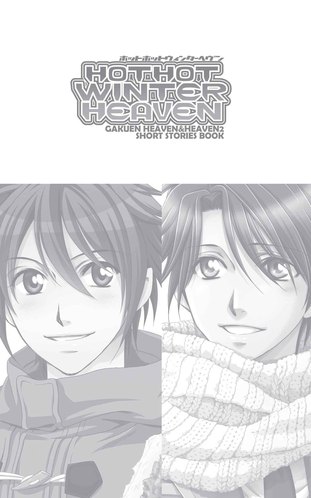
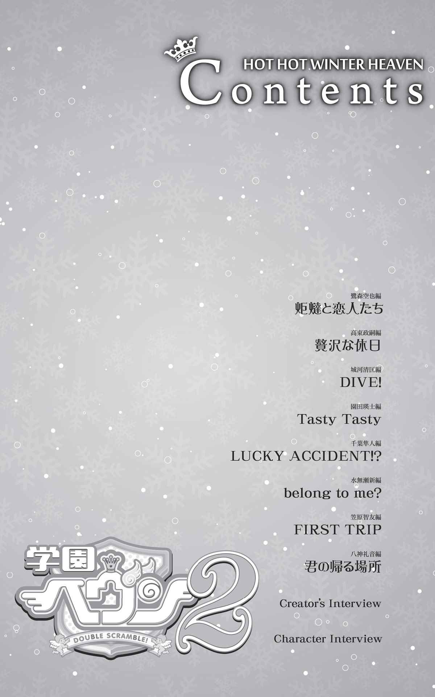
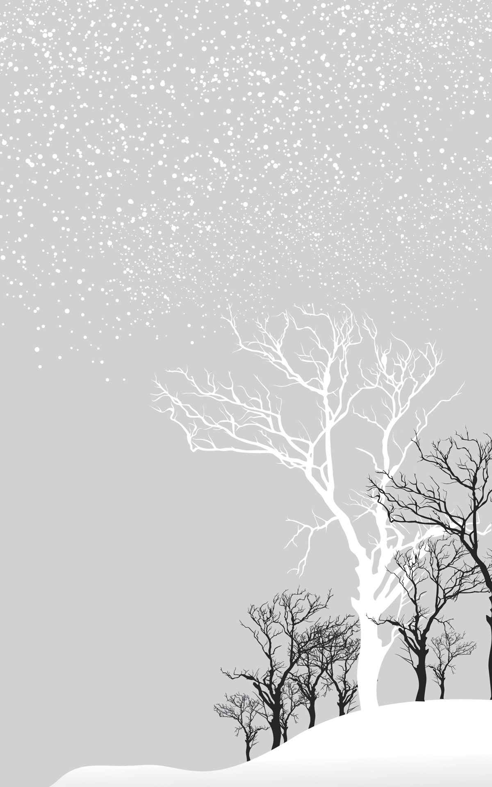
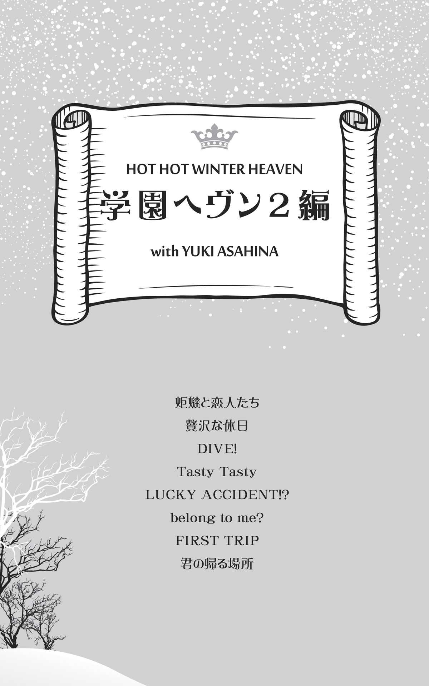
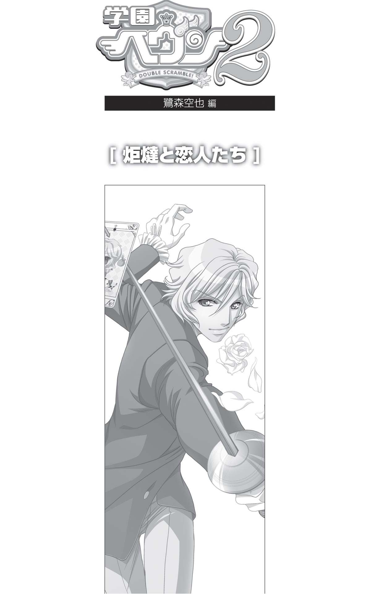
「は、入れない!! 」
大きな四角い板を背中にひもでくくりつけ、空也さんが帰ってきた。しかも、両腕には大きなビニール袋をぶら下げ、さらにはワカサマまで大事そうにギュッと抱きしめている。まるで、どこかに避難する人みたいだ。
あれ？ 掃除道具が足りないからって、１００円ショップに買い物に行ってたはずなのに。
「空也さん......、なにやってるんですか？」
「勇気、コタツだ！ 前に生徒会室にコタツがほしいと言っていただろう！」
あ。ホントだ。よく見たらコタツだ。
背負ったコタツが生徒会室のドアに引っかかって入れなくなっているのに慌てて駆け寄り、ひもを解いてあげた。
「覚えててくれたんだ」
「君の言ったことなら、なんでも覚えているさ！」
両手に持ったトノサマとビニール袋を、はいっと高東さんに渡しながら、空也さんは全開の笑顔で胸を張った。
前に敷いてたタタミを敷き直し、生徒会室にコタツを置いた。天板の上には、丸くなったワカサマ。その横には、みかんを配置。さらに、空也さんがついでにもらってきた上着を制服代わりに着込んで、これで準備完了。
「あったか～い」
もそもそと上掛けの中に入り込み、天板の上にほっぺたをつける。じんわりと伝わってくる熱に、思わず顔がほころんでしまう。
「コタツとみかんと猫というのが日本の冬の古典だと君が言うから、オレもやってみたかったんだ」
俺の横で、コタツに潜り込んでみかんを食べながら、空也さんもご満悦だ。
聞けば、このコタツは学園の近所にある家からもらってきたらしい。買い物からの帰り道、ショッピングカートが壊れて立ち往生していたお婆さんを助けて、家まで荷物を運んであげたら、お礼にくれたそうだ。
ＢＬ学園の生徒だと言ったら、とても歓迎されて、コタツ布団や上着までくれたんだ。本当に親切な方々だった！と空也さんはニコニコしている。
「それは不要品を押しつけられただけでは？」
「そうだとしても、みんな幸せでいいじゃないか！」
うん。確かにその通りだ。
小さな折り畳み式のコタツはちょっと足がガタガタしてるけど、とっても暖かい。こうやって生徒会のみんなでコタツを囲むと、まるで実家にいるみたいで落ち着く。
服部さんもいればいいのに、あの人は現在通算五回目の失踪中だ。きっと寒い思いをしてるだろうな。そうだ。今度、生徒会にコタツが来たってメールしておこう。そしたら、戻ってくるんじゃないかな。
「ところで空也さん。この上着ってなんですか？」
「どてら、と言うそうだ。これを着るといい、とコタツと一緒にお婆様がくださった」
「どてら？」
「丹前に綿をいれたものですね。地方によっては綿入れ半纏とも言います。私の実家では、家族がよく着ていました」
「へえ、そうなんですか。俺、初めて着ました」
空也さんがもらってきたどてらは、柄はちょっとおばあちゃんっぽかったけれども、軽くて暖かかった。制服のジャケットより楽で着心地がいい。
「でも、どうして高東さんは着ないんですか？」
「そうだぞ。遠慮することはない」
「結構です。私はアンチコタツ派なので」
素っ気なく返事をする高東さんは、せっかくのコタツなのに入らず、椅子に座ったままだ。寒さには強いって前に聞いたけど、本当なんだな。
「こんなに気持ちいいのに、もったいないですよー......」
設定温度を強にしたから、天板の上までほっこりあったかい。そこに置かれたワカサマは、ボールみたいに丸くなって、すやすやと寝息を立てている。
「みかんハット！」
その頭の上にみかんの皮を乗せて、空也さんが笑う。くっだらなーいと大笑いしていたら、ワカサマがチラッと目を開けた。だけど『空也だったら仕方ない』みたいな顔をして、また寝てしまう。
うーん、さすが学園のボス猫。俺たちより大物だ。
みかんを食べ終わった空也さんは、さっき俺がやってたみたいに天板に片頬を埋めて、興味津々っていう顔で、じーっとこっちを見ている。こういう時の空也さんって、ちょっと猫っぽい。ふわふわでご機嫌な金色の猫だ。
そう思うとなんだか可愛くて、手を伸ばして髪をわしゃわしゃっとしてみた。
「なんだ、勇気。くすぐったいぞ」
撫でられて、嬉しそうに空也さんが笑う。
「空也さん、みかんもっと食べる？」
「うん！」
にゃあ！って猫が返事するみたいな空也さんに、みかんを剥いてあげた。食べさせてあげたら、ふにゃーと溶けるみたいな幸せな笑顔を浮かべる。
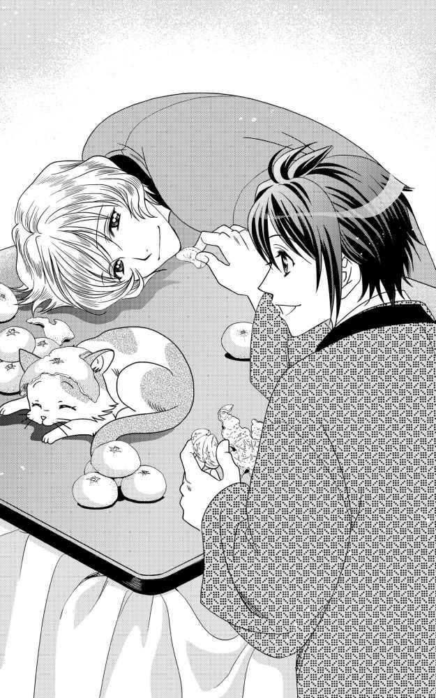
「君はとても優しいな。コタツの天使だ！」
「なんか庶民的な天使だなー」
「みんなに幸せを運んでくれる、素晴らしい存在だぞ」
「確かに、コタツってそうだよな」
「だろう！」
えへん、と目を細めて、空也さんは顔をあげた。
今度はオレが君にあげよう！と、綺麗に白い筋までとったみかんを口元に差し出された。はむっと口に入れると、そのまますうっと唇を指先でなぞられる。
それを舌先でちょろっと舐めた。
「うん。みかん味」
「美味しいだろう！」
空也さんが幸せそうに笑って、指を引く。
わずかに濡れた指先を、そのまま大事そうに自分の唇に当てた。軽く開いた口から覗く赤い舌がそれを舐め......。
「......それ以上続けると、コタツの電源を抜きますが」
冷気をまとった高東さんの声に、俺と空也さんはふたりして、バネ仕掛けの人形みたいにピンと背筋を伸ばした。その態度に宜しい、と眼鏡をクイッとあげると、高東さんは俺と空也さんの目の前に、書類の束を積み上げる。
そのままノートパソコンを天板の上に置くと、空也さんの対面の位置に正座した。
「さあ、始めましょう。〆切は、明日です」
書類はすべて文化祭の決算に向けた資料だ。各部から集めてきたこれを、間違いがないかチェックし、まとめてデュラックに提出するのまでが生徒会の仕事になる。
「そちらは既にデータを入力し、プリントアウトしたものです。チェックをお願いします、副会長」
「わかった！」
「会長はチェック終了後、最終確認をして確認の判を」
「りょーかい」
「デュラックに侮られないよう、決してミスは見落とさないこと。いいですね？」
「は、はい......」
入力は殆ど終わっていて、後は遅れて提出してきたところの分だけだ。そっちは高東さんに任せて、俺と空也さんは数値に間違いがないか、チェックをしていく。
今までの緩みきってた空気は消えて、俺たち生徒会メンバーは、黙々と仕事を始めた。
しばらく集中して作業を続ける。細かい数字の突き合わせは単純だけど、神経が消耗する作業だ。ちょっと疲れてきたな、と大きくため息をついた時、脚になにかがぶつかった。
いま当たったの、空也さんの足？ 俺が邪魔なのかな？
コタツの中で脚の位置をずらしたけれど......ん？ また当たった。それも今度は脛のところに、足の指でちょんちょんと。
これ、わざとだろ？
書類から顔を上げたら、空也さんが俺を見ていた。手には書類。顔は伏せながら上目づかいで、いたずらっぽく笑ってる。
空也さんは、よくこういうふうに俺に触ってくる。
生徒会室で、教室で、お互いの部屋で。何気なく、でも、すごく意味ありげに。スキンシップっていうには少しだけ色っぽいけど、エロいってほどじゃない。
最初は抵抗があったけれど、そんな気持ちはあっという間に崩された。だってさ、好きな人に触られたら嬉しいに決まってるだろ？
それに、こうしていると時々、空也さんの目に狂おしいような熱が浮かぶ。すぐに笑顔で隠してしまうけど、その一瞬の獣みたいな光が俺は大好きだ。
それは本当の空也さんだって気がするんだ。
――空也さんとつきあうようになって、思ったよりずっと空也さんはすべてを明かしてないんだなって気がついた。
嘘をついたり、誤魔化してるって意味じゃない。なにか企んでるって意味でもない。
空也さんは、コントロールできる範囲に自分を押しとどめている。なにかする時に必ずブレーキみたいなものを踏んでいるって気がするんだ。
それは多分、空也さんの優しさから来るものなんだと思う。何気ない自分の行為で誰かを傷つけないように、心を配ってるんだ。きっと俺に対しても。
『優しさという檻』って高東さんがなにかのときに言っていた。空也さんは自ら進んでそれに閉じ込められてるんだって。
そんな空也さんが、時々怖いみたいな顔をする。
例えば、夢中でキスを繰り返したあと。部屋に戻ろうとしたのを引き止められ、振り返ったとき。身体を寄せあい、互いの欲望を痛いほどに感じてるとき。
鋭く光る目に、顰められた眉に、空也さんの限界を感じてたまらない気持ちになる。そういう時、恐怖と期待が混じりあって、俺はすごく興奮してしまうんだ。
――いつの間にか、空也さんのつま先が裾から入り込んできていた。俺が嫌がってないってわかったからかな。
そのままつま先を曲げると、足の指で俺の靴下を脱がそうとする。
その動きがくすぐったくて、俯いて肩を震わせる。チラッと横目で睨むと、ごめんってみたいに空也さんは笑った。
よーし、お返しだ。
組んでた脚を伸ばしてみると、すぐに空也さんの脚に当たった。だけどそのまま素通りして、どこかわからないけど、もう少しつけ根に近いところを足指でつつく。柔らかいから、太腿かな？
そしたら今度は俺の膝に空也さんの脚が当たった。するりと伸びてきた脚が、俺のと絡み合う。
ちょっと、ゾクッとした。ビクッと身体が震えたけど、おかしく思われなかったかな。ドキドキしながら高東さんの方をチラリと見る。
高東さんはノーパソのモニターに真っ直ぐ視線を向けたまま、無心にキーを叩いている。
うん。大丈夫。気づかれてない。
視線を戻すと、じっと俺を見ていた空也さんと目が合った。ニヤッと俺が笑うと、愉しそうに目を細める。
「勇気。この項目だが、これで合っているのか？」
「えっと、そこは......他の部のと照らし合わせてみます」
書類を手渡されるついでに、空也さんがすうっと俺の手の甲を小指で撫でた。お返しに、脚をさらに深く絡め、足裏で空也さんの太股を軽く蹴る。
くすぐったいぞ。
笑いを噛み殺しながら、空也さんが口の動きだけでそう言った。俺は書類に視線を落とすフリをしながら、さらにぐぐっとつま先に力をいれる。
本当は、書類はあんまり目に入らない。俺の意識は、コタツの中の動きにばかり、つい向いてしまってる。
高東さんがいるのに、こんなことしてたらヤバイよな。コタツに隠れて絡み合う脚は、たぶん、結構キワドイ感じになっている。
コタツの熱気のせいで、重なり合ったところが、じんわりと汗ばんできた。その熱が腰の辺りに重く溜まる。
そろそろやめないと。そう思うのに、より深く、脚を絡め合ってしまう。
「それから勇気。こっちの書類だが......」
さっきから、少しずつ空也さんのつま先が、ヤバイ部分を掠めていた。空也さんの脚は、俺より少し長い。だから俺のつま先は太股にしか届かなくても、空也さんはそうじゃない。
差し出される書類を覗き込もうと、少し身を乗り出した瞬間、空也さんのつま先が俺の脚の間をくっと押した。服越しだけど確かな刺激に、甘い快感が走る。
「んふっ。ぅ......」
思わず漏れた声は、自分でもびっくりするくらいエッチだった。やばっ！と身を引いた、その瞬間。
ゴン！とすごい音がして、真っ赤になった空也さんが天板に頭から勢いよく突っ伏した。
「ぶにゃあっ!? 」
天板の真ん中でずっと寝ていたワカサマが、その音に驚いて飛び起きる。まとめてあった書類が、蹴散らされて舞い飛んだ。四角い紙が乱舞する中、ワカサマが勢いよくノーパソの電源コードに足を引っかけるのが見えた。衝撃でプラグがコンセントから抜けて、コードが弧を描いて跳ねる。
「「あ」」
俺と高東さんが、全くおんなじ口の形で、全くおんなじ声を上げた。
「へ？」
その声に顔をあげた空也さんの前に、ひらひらと書類が舞い落ちてくる。
「......バッテリーがあるから、大丈夫ですよね？」
「......最悪のタイミングでした。ちょうど、セーブをした瞬間だったので......ああ。データが壊れている」
......ホント、最悪。
凍りつく空気の中、高東さんが鼻の上でほんの少しだけずれた眼鏡をそっと直した。
「......あなたがたには、言っておかなければならないことがあります」
バレてる。
高東さんには、全部バレてたんだ。わかってて、あえて気づかぬ振りをしていてくれたんだ。たぶん、注意するのも鬱陶しくて......。
「ごめん、政嗣......」
「今日は許しません。心の底から、きっちりと、反省して頂きます。はい、そこに正座」
......それから俺と空也さんは、ＴＰＯをわきまえない振る舞いについて、高東さんにみっちりと叱られた。
そもそも仕事をするべき場所である生徒会室で、生徒会長と副会長がいかがわしいスキンシップを楽しんでいるなど、言語道断。
挙げ句の果てに弛緩の権化たるコタツを置いて、それを用いてプレイを行うのはいかがなものかと。
「プレイって高東さん......」
「違うとでも？ 卑猥に足を絡め合い、局部を刺激し合う行為がプレイではないと？」
「そ、そんなことまでしていない！ あれは事故だ！」
「股間を硬くしておいて、なにが事故ですか」
ううううう......っ。高東さん、ストレートすぎるよ！
だけど否定しがたい事実に俺と空也さんは真っ赤になって深く項垂れるしかない。
とにかくコタツは没収。二度とこの生徒会室に戻せないようにと、コタツを一番喜んでくれそうな人に贈られた。
今、コタツはドラちゃんの部屋にある。インド生まれで寒がりのドラちゃんが、ぬっくぬくだと大喜びで入りまくっているらしい。
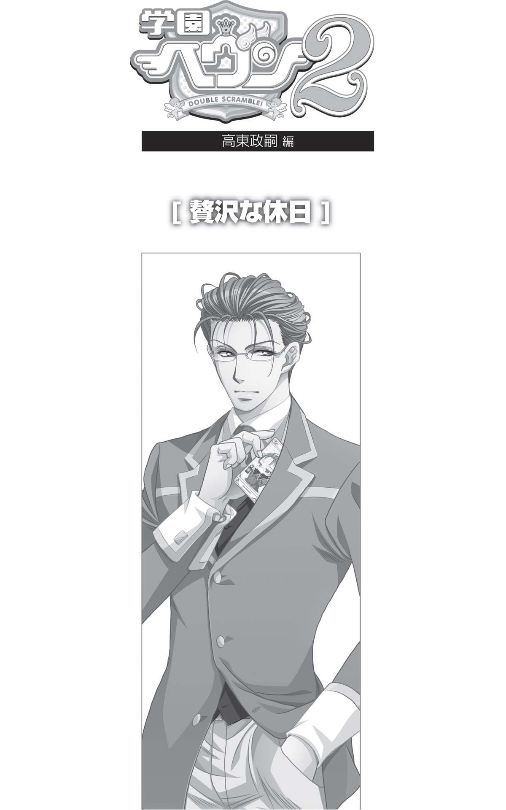
うーん。やっぱり本になると、違う感じがするな。
この前発売した、ぞんびちゃんの新刊を夢中になって読んでいたら、あっという間に点呼の時間になってしまった。
消灯の後もベッドサイドの明かりをつけて、本の続きを読みふける。
ぞんびちゃんは、あいかわらず面白い。ゲラを読ませてもらったから話はわかっているのに、また同じところで泣いてしまった。
それにしても不思議だ。高東さんのどこから、こんな話が出てくるんだろう。
そんなことを考えていたら、小さくノックの音がした。
「朝比奈、いいですか？」
高東さんだ！ 慌ててドアを開けると、電気の消えた廊下にラフな格好をした高東さんが立っていた。シャワーを浴びたばかりなのか、髪が少し濡れている。
「......いいですか？」
低い囁きは、つまり、そういうお誘いだ。
小さく頷くと、高東さんがスルリと入ってくる。後ろ手にドアを閉め、鍵をかけた視線が、ベッドの上で止まった。
「ちょうど読んでたところなんだ」
「......そうですか」
高東さんの頬がわずかに緩む。
「ちょうどいい。朝比奈。今週末ですが、ちょっとつきあってもらえませんか？ この印税で豪遊しますので」
ごうゆう？ 聞き慣れない言葉に首を傾げる。
「派手に遊びましょう。私がすべて奢ります」
「え!? いいんですか!? 」
「もちろん。あなたと一緒に遊びたいんです」
高東さんとデート。しかも豪遊。俺が断るはずがない。
大きく頷くと、高東さんは珍しく嬉しそうに笑って、俺のことを抱きしめた。
ということで、土曜日。
授業が終わって学園島を出た俺と高東さんは、真っ直ぐ繁華街へと向かった。
「まずは服を買いましょう」
そう言って高東さんが連れていってくれたのは、ガラス張りのセレクトショップだった。小さく洋楽が流れる店内は静かで、少しオトナっぽい雰囲気にワクワクする。
ディスプレイされているシャツやジャケットは落ち着いた色合いで、俺がいま着てる服とはだいぶ雰囲気が違う。
あ、でも、このＴシャツはいいかも。
目についたシャツをなにげなく手にとり、ふと値段を見る。
......見るんじゃなかった。三万円って。
慌てて手を引っ込めた俺の後ろで、高東さんもシャツを見てる。焦りまくってる俺とは違って、いつもどおりの平然とした顔だ。
「朝比奈。このシャツはどうですか？」
「どうって言われても......」
値段が怖くて、こんなところで買い物をする気になれない。だって、今日の俺、上着から靴まで全部合わせても、一万円くらいだよ。
「忘れたんですか？ 今日は豪遊です」
「でも......」
これに三万円払うくらいだったら、俺は焼き肉食べ放題に十回行きたい。
「朝比奈」
尻込みする俺に高東さんはふっと表情を和らげた。
「私は区切りをつけたいんです」
「区切り？」
「そう。今回出た新刊は、あなたとこうなる前に書いた最後の作品です。母のことも自分のことも消化しきれずに、もがいていた私の」
そう言って、高東さんは軽く目を伏せた。その胸に浮かぶ思いはどんなものだろう？ だけど、それは言葉にしないで高東さんは微笑んだ。
「すべて、もう過去のことです。だから、このお金でバカみたいなことがしたい。私好みの格好をしたあなたとデートをさせてください」
マイフェアレディごっこです。そう高東さんは笑った。
その自嘲みたいな笑みになにかがストンと腑に落ちた。
「わかりました！ じゃあ、俺、お金のことは考えません。その代わり、いい思い出を作りましょう」
「そういうことです」
どうやら、俺の言葉は正解だったみたいだ。
今度こそ自嘲ではなく、高東さんは微笑んだ。
「......次はこちらを」
お店の人と話をしながら、高東さんは次々と俺の服を選んでいった。
最初はブリティッシュトラッドで揃えてみた。細身のスーツをビシッと決めると、こんな俺でもオトナっぽく見える。
「でも、少し遊びが足りないでしょうか」
もう少しラフな感じにと店を変える。ストリート風、モード系と色々試して、結局キレイめカジュアルに落ち着いた。
服が決まると今度は靴だ。冬だからブーツにしましょう、ということで細めのショートブーツを選んだ。
あとはバッグに時計。マフラーみたいなちょっとした小物を買ったら、高東さんが予約をいれた美容院へと向かう。
モノトーンで統一されたスタイリッシュな店内で、スタイリストのお兄さんに、今日はどうしましょう？って聞かれた。でも髪型なんてどんなのがいいかわからないから、「この服に似合う感じでお任せします！」とお願いする。
俺の服を、上から下までじっくり眺め回したお兄さんは、「ＯＫ！」と頼もしく頷いてくれた。
それから二時間後。
鏡の前に立った俺は、なんか俺じゃないみたいだった。
「いいじゃん」
俺のぴんぴん跳ねる髪を悪戦苦闘しながらスタイリングしてくれたスタイリストさんは、仕上がりに満足そうだけど、新しい服も違う髪型も馴染みがなくて落ち着かない。
「そちらも終わりましたか？」
声に振り返ったら、高東さんが立っていた。
いつも上げている前髪が、いまはナチュラルに降りている。そのせいか、服のせいか、高東さんも雰囲気が違う。
鏡に映る俺たちは、お互い気合い入れてきたぞって感じで、なんかちゃんとデートしてるカップルっぽくて照れくさい。
「よく似合っている。可愛いですよ」
肩に手を置いて鏡を覗き込むフリをしながら、高東さんが耳元で囁く。
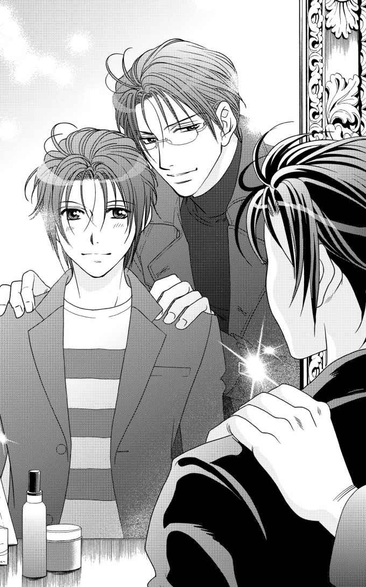
「作戦成功ですか？」
「想定以上です」
そう言ってもらえたのが嬉しくて、笑みが零れる。
見慣れない髪型も、最初の違和感がなくなると結構似合ってるような気がしてきた。それに高東さんにとって悪くないんだったら、俺としては大満足だ。
『区切り』って言葉を高東さんは使った。
お母さんに抱えていた罪悪感とか、現実への失望感とか、そういうものを過去にできるんなら、俺はなんだって協力したい。過ぎてしまえばいい思い出だったって、高東さんが思えるように。
それにこの遊び。俺は楽しくなってきたぞ。
「さあ、行きましょう。次はお待ちかねのディナーです」
「やった！」
高東さんにつれられて、通りを歩き出す。その肩を、いきなり後ろから叩かれた。
「ねえ、君。ちょっといいかな」
目をパチクリさせる俺に、男は名刺を差し出してくる。
「僕、こういう者だけど、君、モデルやってみない？」
「いい、いえ！ いいです!! 」
ビックリして、俺は慌てて逃げ出した。少し先で立ち止まっている高東さんの元へ、大急ぎで駆け寄る。
「ああ、驚いた。モデルってなんだよ......」
「名刺にはなんと？」
受け取っていた名刺には、俺でも知ってるメンズファッション誌の名前が書かれていた。ってことは読者モデルとか？ あり得ない。そんなこと、いままで一度も言われたことない。
「......服ってすげー」
思わず本音が漏れてしまった。これ絶対、服と髪型のおかげだ。でも、高東さんは心外なことを聞いた、とでも言うように眉をしかめた。
「違います。服のせいではありません。朝比奈が美形だからでしょう」
「ハハ。まさか」
思わず笑ってしまった。
俺が美形って。いくら恋人でも、それはない。
「いえ。あなたは表情や仕草のせいでそう見えにくいだけで、顔のパーツは整っていますから」
「それ、空也さんのことじゃないか？」
「いえ、まあ、確かに空也もそうですが......、私はあなたのことを言っているんです」
「高東さん、目、曇りすぎです。だいたい、美形っていうなら俺より高東さんのほうが美形だと思う」
「やれやれ、あなたの目も相当曇っている」
高東さんはあくまで意見を変えるつもりはないようだけど、俺だってそうだ。美形っていうのは、ジョーカーさんとか空也さんみたいな顔の人のことを言うんだと思う。
「では、言い方を変えましょう。......あなたの顔は、私にとって美しい。とても私好みです」
「う......」
あまりに面と向かって平然と言われたから、どんな表情をすればいいのかわからない。顔が好きなんて言われたのは、生まれて初めてだ。
でも、そっか。俺の顔、高東さんは好きなのか。
頬が熱くて、耳のあたりがじわじわ疼く。
「あなたは面白いところに照れポイントがある」
「普通、美しいとか顔が好きとか言われたら照れるだろ」
「見た目だけが好きなのかと怒るパターンもありますが」
「そーかもしれないけど、俺は恥ずかしいよ」
「ウブですね」
「悪かったな」
「そういうところも好みです」
うう......っ。今日の高東さんは攻撃力が高いっ。
真っ赤になってしまった顔を逸らすと、機嫌を直してと、なだめる声が降ってきた。
「着きました。このレストランです」
そこはまるで美術館みたいな外観の店だった。純白の壁面に小さく瀟洒な文字で店名が書いてある他は、銀色のドアしかない。
店の中も白を基調とした、いたってシンプルなインテリアだ。ただ、天井がすごく高くて店内はゆったりと空間が取られている。高級な店だってことは一目でわかった。
案内された席に着いても、俺はまだ圧倒されていた。美味しいご飯は楽しみだけど、ちょっと居心地が悪い。
だけどテーブルの上に置かれた前菜をみた瞬間、そんな気分は吹っ飛んだ。それは見たことがないくらい綺麗な料理だったんだ。
透明なお皿の上に小さな魚のフライが二匹、まるで泳いでいるかのように飾り付けられている。そこに真っ白なムースで表現された雪。料理っていうより絵みたいだった。
しかも、とても美味しい。一口食べただけで目が覚めるみたいな感じで、頭のてっぺんからなにかが湧いてきそうだ。
ここが高級そうだとか、俺たちちょっと浮いてるとか、そういうことも全部どうでもよくなる。
美味いものの前に、世界はひとつだ。
「すごい、すごいよ、高東さん。出てくるなにもかもが夢のように美味しいよ！」
アワビと丸鶏と豚もも肉のコンソメスープは、透きとおってキラキラしているのに、口にいれた途端に複雑で濃厚な滋味が身体いっぱいに広がる。フォアグラにイチゴを合わせた一皿は、濃厚なのに果実の酸味が爽やかで、食べたことのない美味しさだった。
「幸せだなあ......」
うっとりと呟くと、高東さんの目尻が柔らかく笑む。
「ええ、とても」
「桜肉のカルパッチョも美味しかったあ」
「ドレッシングが最高でしたね」
「そう！ あのクルミが入ってるところが香ばしくって、肉とすごい合っててさ......」
大好きなひとと、美味しいご飯を食べて、美味しいねって言い合う。これって本当、最高の贅沢だよな。豪遊バンザイ！
あんまり美味しくて、メインの肉料理を運んできたウエイターさんにまで、この感動を思いっきりしゃべってしまった。そうしたら、コースが終わる頃にウエイターさんがコックコートの男の人をつれて来た。
「お気に召したようで幸いです」
この人が、この店のオーナーシェフ!?
ビックリしたけど、嬉しかった。だって、この人に感謝の気持ちを伝えたい。だからさっきウエイターさんにしゃべったのよりもずっとたくさん、熱意たっぷりに、どんなに美味しかったか、言葉を重ねる。
俺の感想は、つたなかったと思う。でも、シェフの人はにっこり笑って、ウエイターさんに指示をした。
「チャーミングなお客様に、スペシャルデザートを」
スペシャルデザートは本当にスペシャルで、ケーキやアイスクリームに色とりどりのフルーツが見事に飾りつけられたものだった。
「感嘆しました」
珍しく、うっとりとした口調で呟く高東さんに、思わず俺は身を乗り出す。
「ですよね。このスペシャルデザート、ホントすごい！」
「いえ。あなたにです」
「俺？」
「ええ。あなたの情熱に。人を動かすエネルギーに。あなたのそういうところ、本当にたまりません」
不意に眼鏡の奥の瞳が、熱っぽく細められる。その瞬間。急速に周囲の色が褪せたように感じた。その中で、もはやセクシャルな色を隠そうともしない高東さんの眼差しだけが、ひどく鮮明だった。
ふいに、高東さんが手を伸ばしてきた。テーブル越しに差し出された指先が、俺の唇に触れる。
「クリームがついていました」
離れた指先には、生クリームがわずかについている。呆然とクリームの白を目で追いかけた俺の前で、高東さんは自分の指についたクリームに舌を伸ばして舐め取った。
ちらりと赤い舌が覗く。その野蛮な仕草はひどくエロティックで。背筋にぞくっとするものが駆け抜けて、思わず俺は目を伏せた。
「ところで朝比奈。食事はそろそろ終わりにしてもいいですよね？」
高東さんの声が低い。この先の言葉をきっと俺は知っている。
「このあとはもちろん、ホテルを取ってありますから」
行きましょう？とテーブル越しに、高東さんが俺に手を差し出してくる。視界の端に指先が見えて、小さく頷いた俺は、共犯者の眼差しでその手を取った。
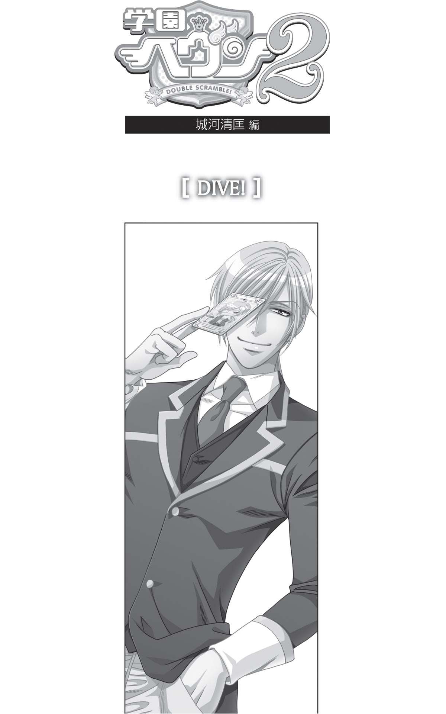
ジョーカーさんは、いつもなにを考えているんだろう。
恋人同士になって数ヶ月。ジョーカーさんが好きなものや、嫌いなもの、喜ぶこと、不機嫌になること、興味のないこと。一緒に過ごす間に、それなりに憶えた。
だけど、たとえ前に喜んだものと同じものをあげても、喜んだことと同じことをしたとしても、ジョーカーさんはいつも同じ反応を返してくれるとは限らないんだ。俺が想像していたとおりに、喜んでくれることもあるし、真逆な反応をすることもある。俺にとってジョーカーさんは、まだまだよくわからないことだらけだ。
だからといって、今の関係に不満なんて全くない。ジョーカーさんはとっても優しいし、頭もいいし、かっこいいし、俺をいつも楽しませてくれるし、性別とか関係なく、これ以上ないほどの恋人だと思う。だからこそ、一緒にいればいるほど、好きになればなるほど、もっと知りたくて、近づきたくてたまらなくなる。
それって恋人同士になったら、普通なことだと思うんだけど、ジョーカーさんはそうじゃないみたいなんだ。
自分のことはどうせ理解できないんだから、相手を知ろうとする必要なんかない、一緒にいることが楽しければそれでいいでしょ、ってジョーカーさんは言う。
だけど、やっぱり俺の心はもっと知りたいと思ってしまう。できることなら、大好きなジョーカーさんの全てを知りたい。そう思うことは、間違ってるのかな？
「そんなに、僕のことが知りたい？」
「わっ!? 」
いきなり背後で声がした。飛び跳ねるように座っていた椅子を回転させると、そこにはジョーカーさんの整った顔が、いつもの楽しそうな笑みとともにあった。
ここはデュラックの部屋で、ジョーカーさんがいるのは当たり前のことだ。だけど考え込んでいた俺は、ドアが開いたことにさえ気づかなかった。しかも、こんなに近くに来るまで......。
「もしかして、俺の心の声、読みました......？」
まさかとは思うけど、ジョーカーさんならそんな不思議な力を持ってたとしても、ありえると思えてしまう。
「まさか。ま、確かに僕はゲームで他人の心理を想像するのは得意だけど、さすがに超能力者じゃない。今のは、君の口から、僕を知りたいって、言葉が聞こえてきただけだよ」
ジョーカーさんを前にして、俺は赤面した。思ってたことを口に出してたなんて、ちょっと恥ずかしい。そんな俺の顔を見つめて、ジョーカーさんはイタズラっぽく笑う。
「そんなに知りたいなら、知ってみる？」
「へ？」
ジョーカーさんは、知る必要なんてないって否定すると思ってたから ちょっとこれは意外な展開。
「じゃあ手始めに、交換してみよっか」
そう言いながらジョーカーさんは、着ていたジャケットを脱ぐと、いきなり俺のジャケットを脱がせはじめた。
「へ？ ジョ、ジョーカーさん!? 」
「あ、もしかしてＨな想像しちゃった？ でも、ざーんねん、そうじゃないよ」
動揺した俺からぱっと離れると、デュラックの部屋に備え付けのクローゼットに向かった。振り向いたジョーカーさんの手には、黒と赤のＢＬ学園の制服ジャケットが一着ずつ。
ジョーカーさんは黒のジャケットを俺に手渡すと、赤のジャケットを着始めた。渡された黒のジャケットを着てみると、なぜか俺にピッタリのサイズだった。
そしてジョーカーさんは、俺のジャケットから抜き取った生徒会長の腕章を腕に巻くと、にっこりと笑った。
「僕らの役割を交換してみたら、わかることがあるかもしれないよ」
翌日から、俺のお試しデュラック体験が始まった。
黒のジャケットの袖に腕を通した時は、面白そうっていう期待でいっぱいだった。だけど、開始わずか一日にして、俺は交換したことを激しく後悔した。
デュラックでジョーカーさんがこなしていた仕事は、俺が想像してた以上に大変だった。書類のチェックや、予算の配分の相談、部活ごとの細かな調整や問題解決、提案の処理、それから寮生活の事細かなことまで。デュラックの仕事は、事務的なものから、体力を使うものなど、多岐にわたっていた。
最近はデュラックの仕事を生徒会が多少分担するようになったとはいっても、デュラックが担当する仕事がここまで多いと思っていなかった。
たった一日役職を交代しただけなのに、今日中に片づけなくちゃいけない仕事が、まだ山積みになって残っている。
「勇気くん。これ、再チェック。武道場の使用申請がかぶってる。あと、こっちは金額の欄が合ってない」
しかも園田さんは、仕事のちょっとしたミスも見逃さない。そしてもうひとりのデュラックのメンバーである千葉さんは、ずっと俺の後ろにピッタリ貼りついて、俺からの命令を今か今かとじっと待ち続けていて、まったく気持ちが落ち着かない。
ジョーカーさんは、いつもこんな状況で仕事をしてたのか......!?
これまで俺は、ジョーカーさんが仕事に追われている姿をほとんど見たことがなかった。むしろ暇そうに遊んでいる姿ばかり見ていたせいで、この仕事量は完全に予想外だった。改めて、ジョーカーさんの優秀さに感心した。感心したところで、仕事が減るわけじゃないんだけど。
「楽しくやってるー？」
ノックもなしにドアが開き、見慣れない赤ジャケットを着たジョーカーさんが、いつものニコニコした笑顔で部屋に入ってきた。
やっと交代に来てくれたと、俺はほっと息をついた。しかしジョーカーさんは、俺の前を素通りすると部屋の隅にあった椅子の上に乗った。
「なにしてるんですか？」
「なにって、蛍光灯を新しいのに交換しに来たんだよ。こういう雑用も生徒会の仕事だろ」
そう言うと、ジョーカーさんは鼻歌混じりで交換作業を始めた。
「それにしても、生徒会長って意外と楽しいね。鷺森先輩と高東先輩は、めちゃくちゃイヤそうな顔してるけど」
ジョーカーさんは、いつも以上に上機嫌で、すっかり生徒会長を楽しんじゃってるみたいだ。高東さんはわかるけど、空也さんまで嫌そうな顔になるなんて、いったい生徒会で何をしたんだろう。
生徒会だけじゃない。このまま俺が仕事を積み上げていたら、デュラックの運営に支障が出かねない。俺は早々に白旗を揚げた。
「降参です！ ジョーカーさん。この仕事の量、俺にはこなせそうにありません！ 元に戻りましょう!! 」
「あれ？ もういいの？ せっかく面白くなってきたところだったのになー。あと二週間くらいは交代してようと思ってたんだけど」
「勘弁してくださいー。俺、一週間どころか三日も無理そうですよ」
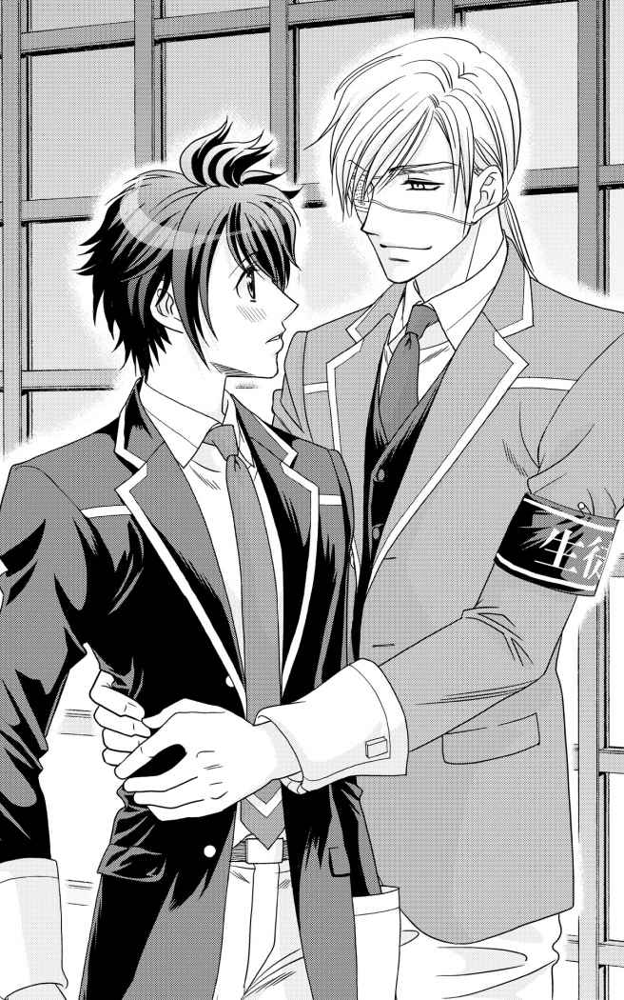
泣きつくように懇願した俺の体に手を回して、ジョーカーさんがぎゅっと優しく抱きしめる。それだけで、仕事に追い詰められて焦っていた気持ちが、ふっと和らぐ。そのまま髪を優しく撫でながら、ジョーカーさんが尋ねる。
「どう？ 僕のこと、ちょっとはわかった？」
「毎日遊んでいるように見えて、実はジョーカーさんがいつもすごい仕事量をこなしてたんだってことはわかったんですけど......」
でも、本当に知りたいのは、そういうのじゃないんだよな。もっと、内面的なことっていうか......。
今度こそ、俺の気持ちを読んだのか、ジョーカーさんは俺を見つめたまま、少し困った笑みを浮かべた。
「うーん、こういうことじゃなかったか。じゃ次、いってみよっか！」
二時間後、訳もわからずジョーカーさんの次のプランに連れ出された俺は、自分の置かれた状況にさらに後悔する羽目になった。
「な、なんでこんなところに―――っ!! !! !! !! 」
ものすごい轟音で風がビュウビュウと吹いていた。目の前に広がるのは、なにも遮るもののない空。ここは高度４０００Ｍ上空。セスナ機の中だ。そして、俺の背後には、インストラクターの人が、ピッタリくっついて立っている。
たしかに手順や注意事項は聞かされた。でもいきなり置かれた自分の状況に頭が全く追いついていない。これから自分の身に起ころうとしていることを認めたくなくて、救いを求めるように隣にいるジョーカーさんを見る。
「準備はＯＫ？」
スカイスーツ姿のジョーカーさんはいつもの朗らかな笑顔のままだ。俺は、必死の形相でブンブンと首を振る。
「む、無理です。ここから落ちるなんて、絶対無理！」
心の準備なんて当然できてるはずもなく、心臓がバクバクと音を立てている。
「大ー丈夫だって。死ぬことはないから。僕のこともっと知りたいんでしょ。だったら、レッツ！ スカイダイビングー♪ 」
明るい声で言い放ち、ジョーカーさんは扉から外へと躍り出た。それに続いて、俺の背後にいたインストラクターが、扉の縁を掴んでいた手を放した。
「ギャアァァァァァァ――――!! !! !! !! 」
死ぬ！ 死ぬ！ 死ぬ！
目の前に広がる一面の青い空を楽しむ余裕なんて微塵もないまま、地上に着くまでの十分間、俺はありったけの声で叫び続けた。
「死............死ぬかと思った............」
ジェットコースターくらいなら平気だけど、これはレベルが違いすぎた......。
着陸後、頭の中が真っ白になったまま地面に突っ伏していた俺の目の前に、ジョーカーさんの靴先が現れる。
「あー、楽しかった♪ どう？ なんかわかった？」
わかった？ ......って、そうだった。俺がジョーカーさんのことを知りたいと思ったから、こんなところに連れて来られたんだった。
ジョーカーさんの過去を追体験するために。でも、だからってこれはどうなんだ!?
「あの、ジョーカーさん。普通......あんな事故に遭ったら、空から飛び降りるのって、トラウマになったりしないんですか？」
「ぜーんぜん。トラウマなんてないよ。飛行機だって普通に乗るしね」
そうですか......。拍子抜けするほどあっけらかんと言われて、ドッと疲れが出た気がした。まだガチガチと歯が鳴ったままの顔をなんとか上げると、ジョーカーさんはニッコリと笑って俺を見つめる。
「あのね、勇気くん。君が僕のことを知りたいって思ってくれるのは、すごく嬉しい。僕はこれまで、自分以外の人間にわからないことや伝わらないことがあるのは、当たり前で、当然の事だと思ってきた。だから、それを知ろうとすることは無駄なことだとも思ってきた」
いつものジョーカーさんの持論に、胸がきゅっと締め付けられる。しかし、その俺の不安を消すように、ジョーカーさんは優しい笑みを浮かべて言葉を続ける。
「でもね、君とつき合うようになって、その気持ちが少し変わってきたんだ。君が僕の事を知りたいと思っている気持ちを叶えてあげたいと思うし、君が願うように僕も僕のことが少しでも君に伝わったらな、って考えるようになった」
え......ジョーカーさんが？
その気持ちの変化が、俺とつき合うことで起こったんだとしたら、それはとても嬉しい。
「僕自身正直に言って、僕のことをどうやって君に伝えたらいいかよくわかんないんだ。だから、こうやって君と一緒に同じことを追体験してみれば少しは伝わるかなって思ったんだけど、さすがにこれは刺激が強すぎたかな」
「は......ははっ......」
相変わらず極端なジョーカーさんの考えに、俺は苦笑する。
生まれて初めてのスカイダイビングのショックで、まだ顔の筋肉はうまく動いてくれない。ジョーカーさんなりに俺のことを考えてくれた嬉しさをすぐに伝えたいけれど、上手く口にできない。
「あー、でも今回は、追体験ってのとは違ったかな。僕自身、この落下を楽しんじゃったしね」
フフッといつもの笑みを浮かべて、このめちゃくちゃな体験を楽しんでいるジョーカーさんを見ていると、俺の知りたいと思うこだわりなんか、もうどうでもいいんじゃないかって気がしてくる。
だって俺がジョーカーさんのことを理解できなくても、結果的にジョーカーさんが楽しそうに笑ってくれるなら、それだけで俺も幸せになれるんだから。
「ジョーカーさん......」
強張っていた顔が自然にほころんでくる。
「今度は、もっといい方法を考えなくちゃね」
ジョーカーさんの腕が伸びて、未だ震える俺の身体を優しく抱き締めてくれる。そして、俺の耳元に唇を寄せて、そっと囁く。
「勇気くん。実はね、もっと簡単に僕のことがわかる上に、今の君の体の震えも解消できる方法があるんだけど、試してみたくない？」
「なんですか？ それ......」
ぎゅっと抱き締められる腕が心地よくて、半ば身体を預けるようにして、俺はジョーカーさんに聞き返す。
俺の耳たぶに唇が触れた。
「セックス」
その一言で、俺の身体は電気が走ったみたいに、一瞬で頭の先まで真っ赤になった。
ジョーカーさんの腕の中で胸が高鳴っていくのを感じたまま、俺は黙ってコクリと頷いた。
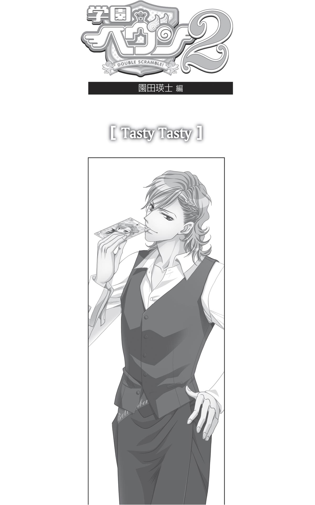
冬の陽射しがデュラックの部屋の窓から差し込んでいた。
外を歩く生徒は寒そうに、マフラーに鼻先を埋めている。マスクをして咳き込む先生もいた。
そんな、寒々しい季節にも、俺は鼻歌まじりでいる。なぜなら、俺には素敵な恋人と、素敵な恋人が用意してくれるおやつが待っているから！
「機嫌がいいね、勇気くん」
ジョーカーさんが作業の手を休めて頬杖をつく。俺は満面の笑みで時計を見上げた。
「はい。もうすぐ園田さんがおやつを持って来てくれるから」
「なるほど」
「園田さんにも会えるし、おやつも食べれるし、天国みたいな時間です」
園田さんは俺の年上の恋人だ。一流の料理人の腕と、複雑でナイーブな（本人に言わせると面倒くさい）性格を持っていて、そのどちらでも俺を楽しませてくれる。
彼の笑顔と、砂糖の匂いを同時に思い出して、おなかを押さえながら頬をゆるめた。
「楽しみだなあ。今日はどんなおやつだろう？ 昨日食べたアフォガードも美味しかったし、一昨日のマカロンケーキも最高だったなぁ」
「エージを待ってるのか、おやつを待ってるのか、わからないね」
「もちろん、両方です！」
「どちらかひとつだけって言われたら？」
「そんなの選べませんって。どっちも大事です」
これは食い意地だけで言ってるわけじゃない。園田さんにとって、料理は彼の作品だ。
プライドとプロ意識が高い彼は、自分の料理が選ばれなかったら、ライバルが自分だとしても悩んでしまうかもしれない。砂糖が足りなかったとか。レモンが少なかったとか。
「じゃあどうしても選ばなきゃいけない時はどうする？ たとえば、エージとエージの作ったおいしいケーキが崖にぶらさがってた場合は？」
「崖!? ピンとこないですけど......」
「それなら、僕が銃を突きつけて人質に取って、さあ、勇気くん。選択の時だ。エージの命とケーキの命、どちらが惜しい？」
指先をピストルの形にして、ジョーカーさんはブリキのおもちゃにつきつけた。笑い声を弾ませて、俺も魔法のソードの代わりに、シャーペンを構えてみせる。
「どっちも助けますよ」
決闘のまねごとに、ジョーカーさんは楽しそうに笑った。
「さすが、全生徒の命運を背負ったエースだけはあるね」
もったいない褒め言葉だ。この学園で起きたトラブルを通して、たくさんの仲間ができたのは事実で、ジョーカーさんや、千葉さんも、その一人だ。その出会いの中で、俺は園田さんと恋人同士になった。
だけど......。園田さんは時折、不安げな顔をする。その正体がなにか、まだわからずにいるんだけれど。
今まで黙っていた千葉さんが、ふと首を傾げた。
「ところで、なぜ園田はデュラックではない朝比奈に毎日おやつを用意するんだ？」
その質問に俺は頬を赤くした。ジョーカーさんには、早々にバレているけど、千葉さんは俺と園田さんが付き合っていることにまだ気付いていないみたいだ。ジョーカーさん以外のことが目に入らない千葉さんらしい。
「そ、それは俺が園田さんにお願いしてるんです。ちゃんとお金も払ってますし」
俺がお金を払ってることにはちゃんとした理由があった。
俺たちが付き合って、しばらくたった頃、園田さんが人差し指を立てながら言った。
「勇気くん、俺たちの間にルールを設けよう」
「ルール？」
「料理に関しては公私混同しない。今まで通りにギブ＆ テイクだ。君は俺にお金を、俺は君に料理を提供する」
「はあ、構いませんけど......」
「意地悪だと思う？ 本当は、君が望むものをなんでも食べさせてあげたいんだ。君はかわいい恋人だし、とても美味しそうに俺の料理を食べてくれる。彼氏冥利も、料理人冥利も尽きるんだ。だけど、けじめをつけないと、際限なく甘やかしちゃいそうだからさ」
「俺をですか？」
「そう」
「えへへ、嬉しいな......。甘えたりはしませんけど、すごく、俺が好きっぽい台詞だから」
照れ笑いしながら、はしゃぐ俺を見つめて、園田さんはチョコレートよりも甘いキスをする。
「っぽいんじゃなくて、すごく、君が好きなんだって......」
......そんな甘く過ごした時間をふと思い出して、俺はにやにやした。俺の姿を見て千葉さんがあきれた顔をする。
「そんなにおやつが楽しみなのか」
「えっ、あっ、はい」
「ほらね。やっぱり、待ってるのは、おやつの方なんじゃない？」
「そんなことないですって！」
ノックの音が響く。
「お待たせ」
扉の向こうから、恋人の声がした。
「園田さんだ！」
子犬のようにドアに駆け寄って、俺は彼を出迎えた。夢のような匂いをさせたデザートをトレイに乗せた園田さんが、すまして笑う。
「いきなり飛び出してくるなんて、そんなに待ちきれなかった？」
くすぐったそうに笑って、俺は小声で囁いた。
「もちろんですよ。......おやつも、園田さんも」
どきどきしながら伝える。園田さんは眩しい笑顔をひらめかせて、キスする時みたいに、俺に顔を寄せた。
「かわいいことを言うじゃないか」
「わ......。近いですよ」
「ばれないって......」
近い距離に、うっとりしてしまう。瞼を閉じかけて、俺ははっとした。園田さんの後ろに、ジョーカーさんと、千葉さんがいたからだ。
「なになに？ 内緒話？ 僕も混ざろうか？」
「運ぶなら手伝うぞ」
園田さんは、二人の申し出を丁重に断った。
園田さんのおやつは、今日もとびきりのデザートだった。
「わあ！ すごく美味しそう！」
「はい、どうぞ。勇気くんにはルバーブ入りフロマージュのスフレ。こっちはキヨのリンゴとマロンのパリブレスト」
「ありがと」
「隼人はフォンダンショコラ」
「食べる」
きらきら目を輝かせて、俺はデザートフォークを構えた。舌がとろけるような、魔法の味を思い浮かべて、暖かい湯気を上げるスフレを口に運ぶ。
「いっただきまーす！ ぱくっ......」
瞬間、笑顔が凍りついた。これは......、美味しくない。というより、ものすごくまずい。
園田さんはにこにこ微笑んでいる。ドッキリをしかけたわけでもなさそうだ。いつものように、俺が美味しいと言うのを待っている。
「どう？」
「え？ ああ......、それは、もちろん......」
「もちろん？」
「ええと......」
俺は言葉を濁した。びっくりしたように、目を見開いた園田さんに、俺はおそるおそる尋ねる。
「あの、もしかして、このスフレ、ジョーカーさん用のじゃないですよね？」
「どういうこと？」
壊滅的にまずいから、とはさすがに言えなかった。園田さんは首を振る。
「これは君のためのデザートだよ。キヨのはパリブレスト」
すると、パリブレストをひとくち食べたジョーカーさんが、無言のまま不満げな顔をして俺に皿をよこした。
「え......？ どうしたんですか？」
ジョーカーさんに、食べてみろというふうに促されて、俺はパリブレストの皿にフォークを伸ばした。ぱくっと食べた瞬間、感動的な味が口の中に広がる。
「............！ 美味しい！ さくさくしたシューの上品な歯ざわりも、甘さ控えめなクリームの口当たりも、リンゴとマロンの食欲をそそる風味も最っ高だ！」
美味しいパリブレストの味に笑顔になって、俺は園田さんに言う。
「ほら、やっぱり、間違えてたんじゃないですか」
「そんなことないって！」
園田さんは俺のフォークをひったくって、パリブレストを口に運んだ。確かめるように咀嚼して、すぐに顔をしかめる。
「ほら、このひどい味。キヨ専用に決まってるじゃないか！」
「えっ!? あの......、園田さん。こっちのスフレも食べてみてください」
「いいけど？」
スフレを口にして、園田さんは得意げに笑った。
「ほら、完璧。さすが俺って感じ」
「............」
俺は言葉を失った。もしかしてこれは、園田さんの味覚が、ジョーカーさんの味覚と同じになってるんじゃないだろうか。
動揺する俺の肘をつついて、千葉さんが皿を押し付けた。
「朝比奈、これも食べてみるか？」
「はあ？ 隼人までなに言ってるんだ？」
園田さんが眉を吊り上げた。促されるままに俺は、千葉さんのフォンダンショコラを食べてみる。
レンジでチンした粘土みたいな味だった。これはどうしたものだろう、と思いながら、俺は正直に園田さんに言う。
「このパリブレストは美味しいんですけど、他の二つはその......なんていうか、ジョーカーさんが喜びそうな個性的過ぎる味です」
「......まずいってこと？」
「そうとも言います」
訝しげな視線を俺に向けていた園田さんは、ジョーカーさんにスフレの皿を渡した。
「じゃあ、こっちをキヨが食べてみろよ。それでどっちが正しいかはっきりする」
「えー、嫌だなあ。そんなリトマス反応みたいなことするの」
ジョーカーさんは文句をいいながらも、渋々スフレを口に入れた。そして、満足そうに頷く。
「うん、これなら食べられる」
ジョーカーさんのコメントに、園田さんはショックを受けて座り込んだ。ジョーカーさんと味覚が揃ってしまったということは、味オンチになったことを意味していたからだ。
「そんな......。俺がキヨ並の味オンチになったなんて......」
「な、なにか辛すぎるものを食べたとか、甘すぎるものを食べたんじゃないですか？」
「食べてない......。パリブレスト以外は間違いなく美味しいと思って、ここに持ってきたんだ。それなのに......」
園田さんは青ざめて、頭を抱えた。
「......これじゃあ料理人廃業だ......」
「そんなに落ち込まないでください。誰にだって失敗はありますよ」
「失敗？ それならまだましだよ。俺にとってはこの味が成功なんだ」
「で、でも、ほら、ジョーカーさんは喜んでくれたし......」
「キヨが喜んだって、意味がないだろ！ 君が喜んでくれなきゃ......」
真剣な瞳に見つめられて、どきっとした。いつも素直じゃない、余裕ぶっている園田さんが、必死に俺のことを考えてくれている。ジョーカーさんや、千葉さんがいることも気にもせずに、俺への気持ちを赤裸々に話してくれたことが、嬉しい。
「料理人としても、恋人としても、君がおいしそうに俺の料理を食べてくれることが嬉しかったんだ。正直、胃袋を掴んだ安心感もあった。君は食べることが好きだろう？」
「大好きです」
「なのに、料理の腕がなくなったら、俺はただの面倒くさいだけの普通の人じゃないか......。そんな俺になんの価値もない」
「価値がないなんて。そんなこと言わないでくださ......」
「適当な慰めなら止めろって！ どうせ、そのうち君は俺を捨てるんだ......」
今日の園田さんは、たしかに、輪をかけて面倒くさかった。
「どうしたんですか？ 捨てたりなんかしませんって」
「じゃあ、ここに女神さまが現れて、料理が出来る俺と、料理が出来ない俺、落としたのはどちらですかって言われたら、なんて答える？」
「それはもちろん、料理が出来る園田さん......」
「ほら、やっぱり！」
ヒステリックな声を上げて、園田さんは立ち上がった。ジョーカーさんと千葉さんの前を素通りして、部屋の窓に立つ。
「どうしたんですか？」
「......死んでやる」
「ええっ!? 」
窓枠に手をかけて、体を乗り出そうとした園田さんの腰に、俺は慌ててしがみついた。
「な、なに馬鹿なこと言ってるんですか！」
「味オンチになって料理が作れないまま、君も失うなんて、耐えられないだろ。ポジティブな君は平気かもしれないけど、俺は無理。ああ、もう！ こんな俺は生きてる意味なんかないんだ！」
「馬鹿なこと言わないでください！」
「放せって......っ」
窓を開け放って、園田さんが足をかける。
外の凍てついた風が、デュラックの部屋に吹き込んで、空気をかき混ぜた。無理矢理、肩を掴んで様子のおかしい園田さんを振り向かせる。
「園田さん、話を聞いて！」
「うるさい！」
あれ？ 説得しようと顔を近づけた時、俺は違和感に気づいた。園田さんの頬が赤い。振り返った悲しげな瞳も、泣いているみたいに潤んでいる。なにより、掴んだ手から伝わる体温がものすごく熱い。
「......園田さん......」
「なんだよ！」
「もしかして、熱があるんじゃ......？」
その時、ふっと園田さんの体から力が抜けた。ぐらりと体が揺らいで、俺の腕の中に倒れこむ。窓から落ちないように引きよせて、園田さんを揺さぶった。
「......園田さん!? 園田さん!? しっかりしてください、園田さん！」
意識を失った園田さんの体は、燃えるように熱かった。
それから、二日間、園田さんは高熱にうなされた。
「ん......。ここは......」
「目、覚めました？ ここは園田さんの部屋ですよ」
彼の額に触れて、俺は微笑みかけた。園田さんはけだるげに頷きながら、布団の中で咳をした。
「......俺、どうしたんだっけ？ あんまり憶えてないんだけど」
「風邪をこじらせて倒れたんですよ。最近、学園でタチの悪い風邪が流行ってたみたいで、それに罹ってたんです」
「ああ......」
ぼんやりした返事が聞こえる。冷えたタオルを額に乗せて、安心させるように笑った。
「味覚がおかしくなったのも風邪のせいなんだって。体調が戻れば、舌も元に戻るって、松岡先生が太鼓判を押してくれました」
「そうだったんだ......」
「だから、心配しなくて大丈夫ですよ。ホント、あの時はびっくりしました。いきなり死ぬとか言うから......」
園田さんは眉をしかめて、照れた視線を背けた。
「覚えてないな、そんなこと......」
これはうっすら記憶がある顔だ、と俺は思った。
「......でも、良かった。これで君に見放されないで済む」
「そんなことで見放したりしませんって」
「............。キヨがさ。崖っぷちに俺と、俺の作った料理があったら、君はどっちを助けると思う？ って」
「あの質問、園田さんにもしたんですね......」
寝癖のついた前髪を引っ張りながら、園田さんは目を伏せた。
「君はたくさんの人に好かれてるからさ......。キヨにも、他の生徒にも。今のところは、食べることが好きな君と、料理人の俺はうまくいってると思ってるけど。その分、俺の料理の腕が落ちたらって考えると、たまに憂鬱になるんだ」
「......やきもち、ってことですか？」
「そんな簡単な話じゃないって」
「簡単な話ですよ。そんな風にややこしくなるまで、俺のこと考えてくれるなんて嬉しいです」
素直な気持ちを伝えて、ぎゅっと、園田さんの手を握り締めた。
「たとえ園田さんが味オンチになろうと、俺は見捨てたりしないし、他の人を好きになったりもしません。園田さんの美味しいご飯が食べられなくなるのは寂しいけど、俺は変わらず園田さんが好きです」
「勇気くん......」
「もし、本当にそんなことになったら、その時は俺が味見係をやりますよ。そうすれば、料理も俺も失わなくてすむでしょ？」
園田さんは感激したように、ぎゅっと俺を抱き寄せた。
「......君が好き。超好き」
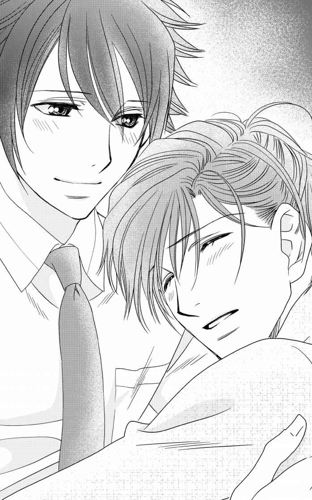
風邪の影響なのか、今日の園田さんはどストレートだ。赤面しながら、俺も彼の背中を抱きしめる。
「俺も......。俺も園田さんが大好きです」
キスにいくタイミングで、はっとして、園田さんが体を離した。
「ごめん。風邪をうつしちゃうな」
「あ、それなら大丈夫です。あの後、園田さんの料理を食べたジョーカーさんと千葉さんも風邪をひいて、寝込んじゃったんですけど、俺はかからなかったみたいで」
「相変わらず、君は強運だな」
「えへへ。......キスします？」
「運試し？ 魅力的だけど、治るまで我慢するよ」
俺の髪を優しく撫でて、園田さんが微笑みかける。
園田さんが全快したら、たくさんキスをしよう。たくさん、彼のごはんを食べて、たくさん、美味しいって伝えよう。
どんどん寒くなる季節も、あつあつで乗り越えられるように。
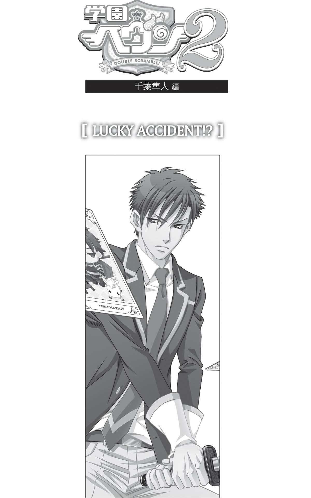
小屋の中にいても、びゅうびゅう吹く風の音が耳につく。凍って白くなった窓ガラスの向こうは、叩きつけるような吹雪だ。
暖房なんかまるでない冷え切った山小屋で、俺と千葉さんは、ふたりで肩を寄せ合って震えていた。
小屋の中は、薄暗い。手を伸ばせば届く距離の床に置いたランタン型の懐中電灯が、弱々しい光を投げかけているだけだから、仕方ない。
ああ、もう......なんで、こうなったんだ？
ジョーカーさんに誘われて、みんなでスキー旅行に来たのはおとといのことだ。
俺はスキーなんて初めてだから、同じく初めての千葉さんといっしょに、ジョーカーさんにスキーを教えてもらってたんだ。
最初は順調にいってた。ジョーカーさんの教え方はうまかったから、半日経つ頃には、滑って止まるくらいはできるようになっていた。千葉さんなんて、弾丸みたいなスピードで斜面を滑り降りてたし、昨日には俺だって中級者向けのゲレンデをなんとか転ばずに滑りきれるまでになったんだ。
だから、調子に乗っちゃったんだよな。
三日目の今日はジョーカーさんの誘いで、初心者でも大丈夫っていう林間コースにチャレンジしてみた。整備されたゲレンデと違って、木が生えていたり道幅が狭かったりするコースは、難しいけれど面白かった。だけど滑っている途中でいきなり吹雪いてきたんだ。
危ないから早くロッジに戻ろうと、コースをはずれて最短距離を先導してくれるジョーカーさんについて、三人で滑っていたはずだった。だけど、いつのまにかはぐれてしまって俺と千葉さんの初心者コンビだけで取り残された。
雪はどんどん強くなる。日だって暮れてきた。視界が悪くなってきて、どっちに向かえばいいのかわからない。
そのとき運よく、この山小屋を見つけたんだ。これぞまさに天の助け。まるで誂えたみたいだなって、小屋に入った俺たちは大喜びしたんだけど......。
「朝比奈。寝たら死ぬぞ」
「大丈夫ですよ......」
俺が黙り込んでいたからか、千葉さんに注意された。それとも俺、自分でも気づかないうちに眠りかけていたんだろうか。
寒い。お腹も減った。
携帯電話は、ロッジに置いてきてしまった。転んだら壊れるかもしれないからって、ジョーカーさんが言ったから。まさか、あの時はこんな状況になるなんて思ってもいなかったんだよな......。
もしもこの吹雪が長く続いたらどうなるんだろう。
山小屋っていっても、ここは寮の部屋くらいの小さな建物だ。薪ストーブがあるけれど、火を点ける道具がない。千葉さんと木片を擦り合わせて火が点かないかって試してみたけど、疲れただけだった。
日は完全に落ちていて、気温もどんどん下がってる。
「千葉さん。俺たち、どうしたらいいんだろう」
「とにかく助けを待つ。ジョーカー様が必ずなんとかしてくれる」
「......うん、そうだよな」
俺たちがいないことに気づいたら、きっとジョーカーさんはすぐに探してくれるだろう。下手に外を彷徨うよりも、見つけやすいこの小屋にいた方が絶対いい。でも......。
「結構、吹雪いてるよな......」
「おう」
「救助、来れるかな？」
「ジョーカー様は強い」
すごく真面目に千葉さんはそう言い切った。
......いや、強いかどうかは関係ないよな？
でも、その言い方があまりに千葉さんで、緊張していた頬が緩む。
「そっか。なら平気か」
「ああ。平気だ」
動じない千葉さんといると、なんだか落ち着いてきた。
まあ、そうだよな。初心者だって大丈夫なコースから少しはずれただけだもんな。のんびり待ってれば、そのうち助けがくる......。
「はっくしょん！」
「......寒いのか？」
「ちょっと......」
本当は、結構寒い。さっきから震えが止まらない。
何度も転んだせいで、スキーウェアがびしょ濡れだったのがまずかったのかな。身体の芯まで寒さが染み込む。
「濡れたウェアを乾かせればいいんだけど......」
「よし、脱げ」
「はい？」
俺の顔をじっと見つめた千葉さんがひとつ頷く。
「こういうときは、裸で抱き合って温め合うんだ」
え？ 裸？
確かに雪山で遭難したら裸で抱き合うって聞いたことあるけど、それはドラマとかの話なんじゃないか？
だけど、千葉さんは自信満々だ。確かに濡れた服を着たままじゃ、体温はどんどん下がっていきそうだけど......。
そんなことを考えてたら、返事の方がおろそかになった。
黙ったままでいた俺に、千葉さんはいったいどう思ったんだろう。いきなりぼんっ、と真っ赤になった。
ホント、音が出そうなくらいに、いきなり真っ赤に。
つられて俺も、赤くなってしまう。
考えてみたら、裸。裸で抱き合うだよ？
い、一応......っていうか一応でもなんでもなく正真正銘の恋人同士の俺たちが裸で抱き合うっていうのは、その、キスより先のアレとかコレとかしたりなんかする可能性が最大限に高まるっていうか、その......。
いや。いやいやいやいやいやいや。
考えすぎだろ。俺。想像過多！ は、は、裸で抱き合うって言ったって、別に邪っていうか、そんなじゃない。千葉さんだって、最初はそんなつもりで言ったんじゃないはずだ。本当に真面目に、お互いの身を守るために、真剣に提案してくれたはずなんだ。
でも、想像しないってほうが無理だ！
真っ赤になっている顔をお互いに逸らしあって、二人してもじもじしてしていると、いきなり千葉さんが立ち上がった。
「......よしっ！」
「へ？ 千葉さん？」
脱いでる。脱いでるよ！
スキーウェアもその下に着てたシャツも脱ぎ捨て、俺の両肩をがっしと掴む。
「いくぞ！」
呆気に取られている俺の身体を、千葉さんは抱き締めた。
押し当てられた胸板が、冷え切った頬に暖かい。じわっと染み込んでくる他人のぬくもりが、凍えて強ばった身体を溶かすようだ。
「あったかい......」
思わず漏れた本音に、千葉さんが安心したように息を吐く。
でもこれじゃ、俺だけが暖かくて、千葉さんはメチャクチャ寒いよな？ 見ると腕から肩にかけて、びっしりと鳥肌がたっている。雪の粒も残っているような、濡れて冷え切ったスキーウェアを裸の身体に押しつけられて、寒くないはずがない。
「千葉さん、あの......離してください。冷たいだろ？」
「問題ない」
離れようとジタバタするけれど、逞しい腕にギュウッと抱き寄せられ身動きできない。温かい胸に抱き込まれてすごく幸せだけど......千葉さん！ うぶ毛が逆立ってるって！
「このままじゃ千葉さんが凍えるよ!! 頼むから離れてください。これじゃ心配でおとなしくなんかしてられない！」
「ならば、お前も脱げ！」
「あっ、そっか！」
びしっと命令する声に押されて、急いで俺もウェアを脱いだ。
濡れたジャケットを放り投げると、間髪いれずに引き寄せられる。剥き出しの身体に触れた千葉さんの胸はやっぱり冷えていて、少しでも俺の体温を分け与えたいと、ぴたっと胸板を重ねあわせた。
「......っ」
こうやって千葉さんの体温を感じるのは、ものすごく気持ちがいい。最初は温度差があったお互いの肌が、熱を移しあい、なじみ、同じ熱へと混じり合っていく。
心臓が激しく脈打つ。こんな大変なときなのに、ドキドキしすぎてどうにかなってしまいそうだ。
千葉さんの身体。千葉さんの素肌。
無駄な肉なんてひとかけらもない、研ぎ澄ました筋肉の固さ。自分じゃない他人の身体の匂い。首筋にかかる息。鼻先をくすぐる髪。
あんまりすべてを鮮やかに感じすぎて、頭の芯がクラクラする。
ぴったりとくっつけあった裸の胸から、お互いの鼓動が響きあう。千葉さんの心臓も、俺と同じくらいドクドクいってる。
俺と抱き合って、千葉さんも興奮してるんだ。
そう思ったら、背骨が甘く痺れた。
もう寒さなんて、これっぽっちも感じない。俺も千葉さんも、身体が火照って熱い。
「朝比奈......」
耳の後ろで、掠れた声がした。それだけで、身体の芯がゾクッと震える。たまらずにしがみつくと、千葉さんが大きく唾を飲み込んだ。
「朝比奈」
熱っぽい声に息が苦しい。
千葉さんの身体が俺にのしかかってくる。それに逆らわず、ただ目の前の身体にすべてを委ねた。
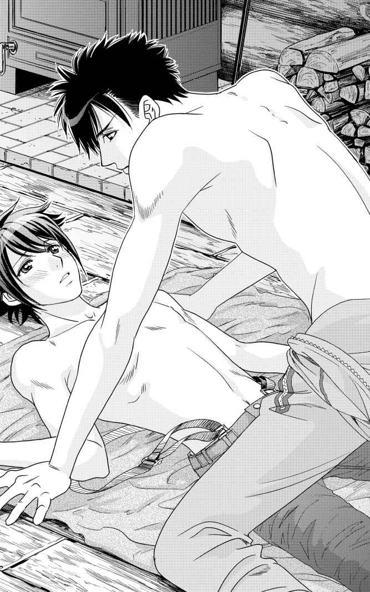
仰向けに押し倒されて、思わず目を閉じると、勢いよくキスされる。軽く開いた唇の間に、強引に舌が入ってくきた。そのまま乱暴に口の中を舐め回されて、息が上がる。
「あさひな......、あさひな......っ」
息を切らし、うわごとみたいに熱っぽく、千葉さんが俺の名前を呼ぶ。答えたいけど、口の中が千葉さんでいっぱいで、ただ鼻に甘い音が抜けるだけだ。
それでもすべてを受け止めたくて、俺は千葉さんをぎゅっと抱きしめた。舌を伸ばし、千葉さんの上顎を舐める。一瞬びくっと震えたあと、絡めた舌が強く吸われた。ちぎれそうなほど痛いのに、それにすら興奮してしまう。
部屋中を転がるように、上になり下になり、キスを繰り返す。厚いスキーウェアのパンツ越しに、ごりっと固い感触が押しつけられる。その生々しい感触に目が眩むほど興奮した。
「好きだ......、朝比奈、好きだ......」
千葉さんのキスが首筋を降りていく。強く吸われて、チリッとするのが堪らない。じっとしていることなんかできなくて、俺は思わず手を......。
「っ......!? 」
その手が、なにかに当たった。滑るような音に続いて、ぶつかり合う金属音がけたたましく鳴り響く。
「わっ!? 」
ビックリして目を開けたら、壁に立てかけていたスキーのストックが倒れて、床に転がってたもう一本を、天井まで跳ね飛ばしてるのが見えた。飛ばされたストックは天井に当たり、その衝撃でなにか小さいものが千葉さんの背中の上に落ちてきた。
「うぉっ!? 」
夢中でキスをしていた千葉さんが、ビクゥッ！と跳ね起きる。バッと振り返ったその視線が、落ちてきた物を見とがめ、不審げに細められた。
「なんだ、これは......」
「カメラ......？」
千葉さんが拾いあげたそれは、とても小さなカメラだった。
こういうのが盗撮に使われますって、テレビで言ってたのを見たことがある。普通、山小屋にはないものだと思う。多分。
「なんで、こんなものが」
不機嫌に唸ると、ものすごく凶悪な顔をした千葉さんが、それを握りつぶそうとする。
でも、なんか引っかかる。『なんで、こんなものが』......なんで......。
「待って、千葉さん！」
はっと、閃いた。勘違いかもしれない。だけど、あの人だったらやりかねない気がする。
潰される寸前だったカメラを奪い取って、小さなレンズを覗き込んだ。
「もしもーし」
たぶん、マイクもついてると思うんだよな。会話も聞こえたほうが面白いだろうし。な？
「......ジョーカーさん？」
『正解☆ 』
「ジョーカー様!? 」
『残念。バレちゃったね』
ああ......やっぱり。
カメラについているスピーカーから聞こえてきたのは、とっても上機嫌なジョーカーさんの声だった。
「なぜ、このような......」
『君たちがあんまり進展しないから、きっかけを作ってあげようと思ってさ。堪能できたでしょ、雪山遭難』
きっかけって......。
俺も千葉さんも、バカみたいに口を開けて、カメラの前で硬直してしまう。
いや、確かに進展しかかったけどさ。でもさ。
「まさか、我々を見て......らしたのですか」
『うん。だって本当に凍死とかしちゃったらマズいでしょ』
「いつから......」
『もちろん最初から』
その言葉を聞くと、千葉さんは真っ赤になって倒れ伏した。うぉぉぉぉおお、とかなんとか、その口からは意味不明のうめき声が漏れている。
うん。わかる。その気持ち。千葉さんがやらなかったら、俺がやってた。でも、他人が動揺すると自分はかえって冷静になるって本当だよな。
「俺たちが、ジョーカーさんとはぐれたと思ったのは、ただの勘違いだったんですね」
『まあね、っていうか、僕がそう思わせたんだけど。でも、まさかカメラが見つかるとはね。さすがはエースくん。強運なだけはあるね』
楽しそうなジョーカーさんに大きくため息をつく。
千葉さんはまだ羞恥心にうちのめされて、瀕死の状態だ。
「あの、それなら俺たちお腹も空いたし、ロッジに帰りたいんですけど」
『吹雪が止んだら、迎えに行ってあげるから、おとなしく待ってなよ。まだしばらくかかるから、続きを楽しむのもいいかもね』
僕はもう見ないからさ。じゃーねー、とジョーカーさんの声は途切れた。遠隔操作ができたのか、電源ランプも消えている。
「........................。続き......？」
床に突っ伏していた千葉さんが、顔だけあげてチラっと俺を見た。俺も、カメラを両手で持ったまま、横目で千葉さんを見る。黙り込んだ俺たちを微妙に緊迫した空気が包み込む。
ジョーカーさんが最後に放り込んできた爆弾が爆発するのかどうなのか。
窓の外、いまだ吹雪は止む気配を見せなかった。
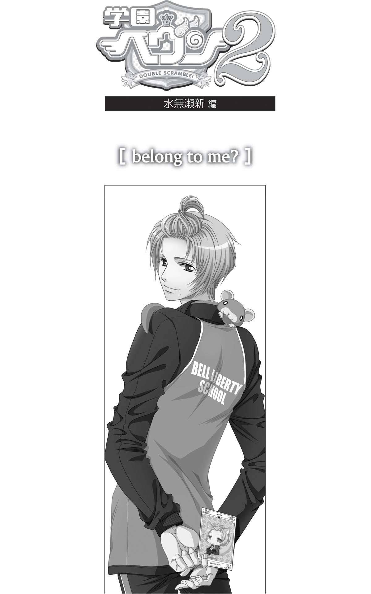
熱い風が一箇所に集中しないよう気をつけながら、濡れたアラタさんの髪にドライヤーの風を当てる。しっとりとした髪の束を、さらさらと解くように丁寧に乾かしていく。
「熱くないですか？」
俺の胸に顔を載せ、もたれかかって床に座ったアラタさんは、お風呂上がりだからか、眠そうな顔をしてる。
「ん......、へーき。ありがと」
少しだけ首を傾げた。右っかわを、もっと乾かしてほしいんだ。柔らかな髪を指で梳きながら、俺はそっちに風を当てた。
アラタさん、前は触れられるのを嫌がってた。だけど一緒に夜を過ごすようになってから、こんな風に俺に身を預け、もたれかかったりもしてくれるようになった。あまり甘えてきたりしないひとだから、俺は髪を乾かす口実を思いついた自分を褒めてやりたい。
「じゃ、今度はちょっとうつむいてください」
アラタさんがうつむくと、伸びた髪が首から零れて、項が露わになった。そこがドキリとするくらい白くて、俺は息をのみそうになる。
黙っていられなくなって、俺は慌てて口を開いた。
「アラタさん。髪、伸びましたね」
「......そろそろ切らないと。めんどくさい......」
とろんとした声の返事に、俺は少し引っかかる。
「めんどくさいって、もしかして自分で切るんですか？」
「うん。適当に」
自分で切るんだ。確かによく見ると髪の毛先の長さが少し不揃いだ。
つき合い始めてわかったけど、アラタさんはたまにズボラになる。普段のゆるい言動に反して、部屋の片付けや掃除はマメにしてるし、体の洗い方やシャンプーだって丁寧だ。服も俺みたいに脱ぎ散らかしたりしない。
でも、髪は自分で切る。適当に。
髪って身なりの中では、わりと大事なとこだと思うけど、そこはいいんだ。基準がよくわからない。
ま、そういうところも、アラタさんらしいといえばそんな感じがして、面白いかな？
「アラタさんは、どうして髪伸ばしてるんですか？」
「だから、切るって言った」
「いえ。そうじゃなくて、面倒くさいならもっと短くしたらいいのにって思って。たとえばえっと......千葉さんみたいに」
「はやや......？ ん......あのくらい短いと、自分で切るのは逆に面倒」
「そうなんだ」
イマイチ、ピンとこない。俺、自分で髪切ったのなんてないからな。でも、アラタさんが言うなら、そうなんだろな。
「それに髪型変えるのもめんどくさい。小学校に入る前から、これ以上、長くも短くもしたことないし」
子供の頃のアラタさんか。きっと、すっごく可愛かったんだろうな。
「おれ、髪の毛伸びるの早いから、母親がしょっちゅう美容院に連れていかなくてすむようにって、このアタマにされてからずっと」
「へぇ。俺は子供の頃、父さんと一緒に床屋に行ってましたよ」
「ふうん。床屋って行ったことない。おれは、自分で適当に切る方が楽でいい」
「そっか......」
なんとなく、しんみりしてしまう。子供の頃、定休日に月一くらいで父さんと床屋に行くのがお約束だった。床屋だけじゃない。パン屋は朝も早いし、長い休みも取れないけど、それでも俺には家族で過ごした記憶がたくさんある。
でも、アラタさんのご両親は共働きで仕事が忙しいって言ってたから、そういう思い出が少ないのかな。
「あ、でも......」
うつむいていたアラタさんが、キュッと首をすくめた。
「寒いから、もうちょっと切らずにこのままでいよ」
アラタさんって、寒がりの暑がりだからな。それにマフラーは好きじゃないって、よくマロを首に巻きつけてたっけ。
「今くらいの長さだったら、首の後ろまで髪で隠れますもんね」
項にかかる髪を、指先で軽く弾いた。毛先の隙間から、白い素肌がちらちら見える。
......これはチャンスかも。
ふいに胸の内に潜ませていた計画を思い出し、チュッと項にキスをした。
「ひゃっ!? 」
アラタさんの身体が、ぐにゃりと曲がる。すっごい前屈しながら振り返ったアラタさんに、じろりと睨みつけられた。
「な、なに......？」
顔を赤らめながら睨んでも、涙目だから俺には逆効果なんですけど。
「すみません。つい」
ダメだ。顔がニヤけてしまう。
「えっと、実は前から、アラタさんにキスマークつけてみたいな～。なんて思ってたんです」
「――...キスマーク？」
アラタさんの眉間にしわが寄る。微かに揺れる瞳に、ためらいと不安が見て取れる。
「そう、キスマーク！ 男なら憧れるでしょ！ でもアラタさん部活では水着だし、他人にはわからないとこないかなーって。ずっと探してたんです！」
俺だって分別はある。アラタさんに迷惑をかけたくない。でも恋人としては一度はつけてみたい。俺の力説に、強張ったアラタさんの肩の力がふっと抜ける。
「あほ......」
「大丈夫ですって。このくらいの長さだったら、髪で隠れて見えないから」
「いややっ」
またキスしようと俺も上体を倒したけど、アラタさんは身を捩って逃げ出した。
「首は絶対いや。くすぐったい......」
逃げたアラタさんを追っかけて、強引に首筋に唇を押し当てる。知ってるもんね。くすぐったいだけじゃない。ここ、触られるとアラタさんは、気持ちよくなっちゃうんだって。
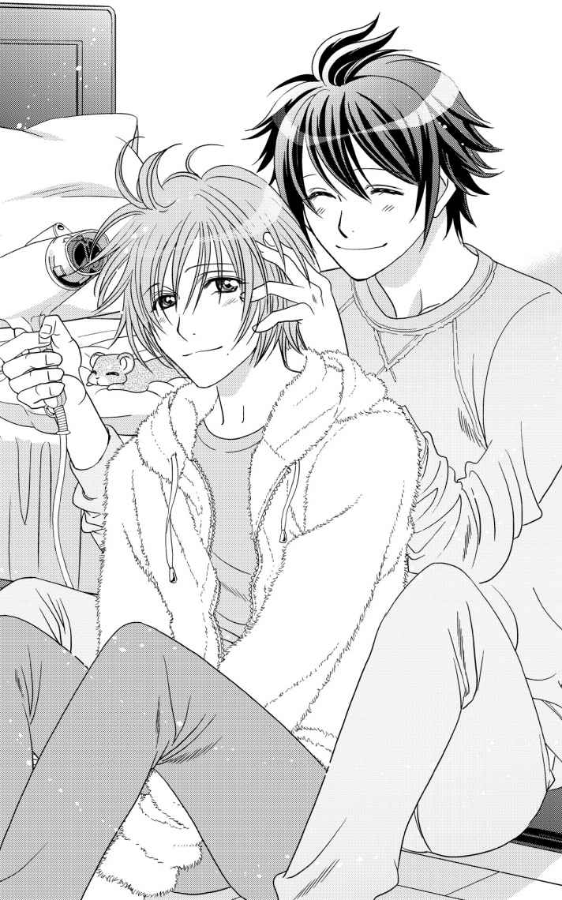
「アラタさん......、少しだけ......、ちゅっ」
「あっ...！」
漏れたアラタさんの吐息に、思わず喉を鳴らす。
ドライヤーを床に置き、アラタさんを抱き締めた。頬に手をかけ振り向かせて、そのまま押しつけるようにキスをする。
「...っんん......」
アラタさんは、さらに大きく身を捩る。唇を離すと、アラタさんが視線を泳がせながら、聞いてくる。
「なんで、つけたいんだ？ キスマークなんか......」
「え？」
キスマークをつけたい理由なんて、聞かれると思ってなかったから、言葉に詰まってしまう。
「なんでって、俺のものだって実感できるから？」
「......物好きな奴。こんな身体でいいのか？」
アラタさんが口を歪めて笑う。恋人になる前、何度も見た笑い方。俺は、あまりさせたくない。
「こんな、じゃないです。俺は、アラタさんが欲しいんです」
わざと子どもっぽく言い切る。でも返事を拒むように、アラタさんは正面を向いてしまった。
「......どうして、欲しいなんて、簡単に言える。そう思ったって手に入るものじゃないだろ......」
アラタさんの伏せ気味の睫が震えたように上下する。瞬きするだけで消えてしまうような気がして、少しだけ抱きしめる力を強めてみる。
「簡単じゃないかもしれない。でも、欲しくて欲しくて、たまらないから。だからキスマークつけて、『俺のものになーれ』っていう、おまじないをかけたいんです」
「おまじないって......小学生か」
皮肉めいた言葉を吐きつつも、困ったように笑うアラタさんの顔からは、歪みが消えていた。安心して、再び首筋に唇を寄せる。
「アラタさん、そのまま動かないで......」
「っ......！ うぅ......、あ......っ」
首筋に舌が触れただけで、アラタさんの体がびくびくと震える。俺がそうさせてるんだって思うと、体の奥から熱がこみ上げてくる。
軽く吸ってみると、抱き込んだ体がいっそう跳ねる。このまま噛み付いてしまいたい衝動に襲われる。
「ゆ、......勇気、やっぱり、首はいやだ......。お前にそれ以上されたら、おかしくなる......」
懇願めいた声に、はっとして腕の力が弱まる。
おかしくなってもいいのに。どんなアラタさんでも、俺に見せて欲しいのに。
上体を倒して逃げ出したアラタさんが床に仰向けになってしまったので、仕方なく首は諦めて、上にのしかかる。
首は保留にしておいた方がよさそうだ。
「わかりました。そんなに首が駄目なら、他のところを探しましょう」
大丈夫。実は他にも目星をつけていた場所がある。
「......なに、ニヤニヤしてる」
「アラタさんって、身体柔らかいですよね」
パジャマの上から太腿を撫でた。飛び込みは美しい動きを求められるから、アラタさんは日々柔軟を欠かさない。そのおかげで、関節の柔軟性が高く、けっこうキツめの体勢になっても受け入れてくれる。
「この間、アラタさんの両脚を肩にかけてしたときとか。お互いの体がぴったりくっついて、一番奥まで繋がっている気がして、ものすごく気持ちがよかったな」
そのときのことを思い出したのか、アラタさんの顔が、ぼぼぼっと耳まで真っ赤に染められていく。
「なっ...、あほっ！ そんな恥ずかしいこと、堂々と言うな！」
ドンドンと胸を叩かれても気にせずに、太腿の表面から内腿に指を滑らせる。
「アラタさんなら開脚180 度いけますし、例えばこの脚の付け根あたりなら......」
「眠いから、おれは寝る！」
話を強引に進めすぎたか、アラタさんが俺の肩を押しのけて、這い出ようとする。
「えー!! 明日は部活、ないんですよね？ 俺、エッチする気まんまんだったんですよ～！」
それはない。いくらなんでもそれはない。この状況でお休みなさいって、それは絶対あり得ない!! 俺はこの日をものすっごく楽しみに待っていたのに！
だいたいアラタさんだって、絶対そのつもりだったはず。俺を部屋に入れてくれてるのが、なによりの証拠。
「ねーねー。アラタさーん。しよーよー」
「はなせ......っ」
俺から逃げようともがくアラタさんの胸に、頬をすりすりとこすり付けて甘えてみせる。パジャマ代わりのパーカー越しに、トクトクと早い鼓動が伝わってくる。
「ねえ、アラタさん。俺としたくない？」
見上げるように、じっと見つめる。アラタさんは、なにも言わない。ただ首を、小さく横に振っただけ。
「よかった」
アラタさんと恋人になって、俺は少しズルさを覚えた。俺のまっすぐな言葉でアラタさんが揺らいでくれるなら、それを惜しまない。無邪気さに作意を乗せる。肯定よりも否定のほうが、答えるのが楽でしょう？
ふるふると頭を振り続けるアラタさんを、俺はギュッと抱き締めた。太腿の内側に、そろりと手を這わせる。
「んっ......」
アラタさんが、息をのむ。パジャマの布地越しに、緊張からか筋肉が震える感触が伝わってくる。日の当たらないここは、いっそう白く柔らかくて滑らかな肌だと、俺はすでに知っていた。
「キスマーク、つけたいな。アラタさんが俺のものだっていう印が欲しい......」
耳元で囁いたら、アラタさんの首の動きが、ようやく止まった。
気がついたら、朝だった。俺......アラタさんのベッドで、そのまま寝ちゃったんだ。
俺の鎖骨に、さらさらとした感触が触れてくる。目だけ動かして見下ろしたら、アラタさんの頭があった。柔らかい髪を撫でたくて、そこに手を伸ばそうとする。
「......おはようございます。アラタさん」
アラタさんの頭が動く。俺の鼻先に、アラタさんの髪が触れる。次の瞬間、鎖骨の上にビリッとした痛みが走った。
「イタタタタ！」
思わず声を上げたら、アラタさんがパッと顔を上げる。
「あ。悪い。加減、わかんなくて」
「いえ......。痛いというか、ビックリして......」
今のなに？ アラタさんが、俺の鎖骨に吸いついた？
アラタさんが、俺の上からどく。続いて俺も起き上がると、アラタさんはもうジャージに着替えてた。
「......昨夜の仕返しだ」
仕返し？ きょとんとなって見下ろすと、鎖骨の上が少し赤くなっていた。これ？ キスマーク？
「......キスマークつけたいのが自分だけって思ってるなら、それ、間違いだから」
アラタさんは、さっと俺に背を向けた。その耳が、見事に真っ赤に染まってる。
それじゃ、え？ アラタさんも？
そう思ったときには、俺はアラタさんを抱き締めてた。俺の腕の中で硬くなるアラタさんの項に、髪の毛越しにキスをする。
眩しく朝日の差し込む部屋に、チュッと弾ける音が響いた。
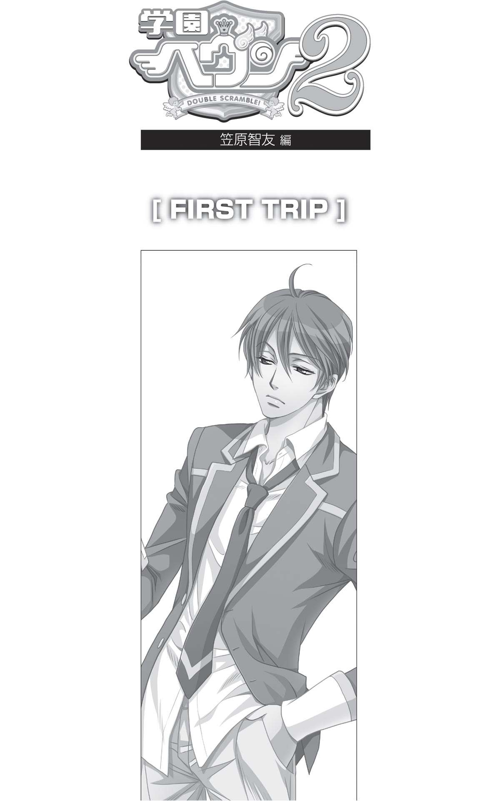
......寒い。降りしきる雪を目の前にして、俺は首に撒いていたマフラーに鼻先まで潜った。
この雪、さっきよりも強くなってるんじゃないだろうか？ 軒先の板張りの床まで、もう雪で真っ白になっている。
「勇気！ そんなところに引っ込んでないで、こっち来いよ！ すごいぞ！」
雪景色にすっかり溶け込んでいたトモが、大きな声で俺を呼ぶ。マフラーに埋もれていた顔を出すと、ひさしの下から外に出る。木製の欄干の向こうには、絵はがきのような京都の美しい街並が広がっていた。
「わあっ、すごいなあ」
「さすがは、清水の舞台だな！ 京都の街が見渡せる絶景だ」
興奮気味に身を乗り出すトモは、いつもよりはしゃいでいるように見えた。
トモの楽しそうな顔を見るのは、もちろん嬉しい。それに俺だって思いがけず二人で京都旅行に来られて、ラッキーだって思ってるし、見るものすべてがすごく楽しくて、旅行も十分に楽しんでる。
でも、これはちょっと寒すぎるんじゃないんだろうか。確かに、京都の雪景色は風流で綺麗だとは思うけど、この雪がもたらす寒さで、自分の中の楽しい気持ちがどんどんしぼんでいくのがわかる。
そう思っているのは俺だけじゃないみたいで、寒さのせいか、観光客もまばらだ。
「なあ、勇気。次はどこへ行く？」
そんな寒さなんて気にも留めていないような明るい声で、トモが聞いてくる。
「トモ、この後の行き先、決めてなかったのか？」
そもそもこの旅行の行き先を京都に決めたのはトモだ。旅行をすごく楽しみにしてたから、てっきり行きたいところがあるのかと思ってたんだけど......。
「いや、それがさ......」
苦笑しながらトモはコートのポケットから、折りたたんだ紙を取り出した。
「京都に行くって話をオカ研にしたら、僕が解説つきで絶対に行っておくべき京都のオススメスポットをまとめてあげようって言いだしたんだ。だから、適当に見繕ってくれって頼んだんだけどさ。ここに来る新幹線の中でオカ研のレポートを見たら、全然使えない中身だったんだ」
うんざりした顔でトモに渡された紙を開いてみる。
「うわぁ、これはないな......」
「だろ？」
文字と写真でびっしりと埋め尽くされたオカ研のレポートは、ほとんどオススメ心霊スポット一覧といってもいいものだった。血が染みこんだ床板を天井に張り替えた部屋があるお寺とか、出ると噂の井戸や曰く付きの首塚や刀やふすま絵の数々......。
「......こわ......」
モノクロで印刷された写真を見ただけでも、ゾクッとした。オカ研......真夏ならともかく、この寒空にこれはないよ......。
「それで仕方なく、俺でも思いつく定番の名所と思って、清水寺に来てみたんだけど......。でも、ここ以外は思いつかなくってさ......」
「他に行きたいところはないのか？ 京都がいいって言ったのは、トモなんだろ？」
この旅行は、ＢＬ学園の廃校問題が片づいた事を労って、ナオ兄の前の理事長で、トモの後見人でもある、鈴菱さんがトモにプレゼントしてくれたらしい。
冬休み中に行けるところなら海外でもいいって言われてたらしいんだけど、トモは京都を選んだ。だから、トモは京都にすごく行きたい場所でもあったんじゃないかと思ってたんだけど......。
「確かに京都に決めたのは俺なんだけど、別にどうしても見たいものがあったわけじゃないんだ」
「じゃあ、なんで京都がよかったんだ？」
「修学旅行の定番だから」
「修学旅行？」
意外な答えに、思わず俺は聞き返した。
「ＢＬ学園の修学旅行は、毎年海外だから、京都には行かないだろ？ それに俺、今まで修学旅行とか行ったことなかったからさ。旅行だって、今までに行ったことがあるのは、施設の遠足くらいだったから、京都の修学旅行って、ちょっと憧れだったんだよ」
そっか。俺がなにも知らずに無邪気に修学旅行に行ってた頃、トモはそれどころじゃない毎日を送ってたんだよな。だからトモは修学旅行に......。
その頃のトモのことを想像すると、胸がきゅっと締め付けられるような気持ちになる。
「いてっ！」
いきなりトモに、ほっぺたをぐにゅっと引っ張られた。
「なにするんだよっ!? 」
「せっかくの旅行だぞ。そんな深刻な顔しないで、笑え笑え」
そう言いながらトモは、両手で俺のほっぺたを引っ張っては寄せてを繰り返し、変顔になった俺の顔を見て笑う。
「っひゃめろって、トモー」
存分に俺のほっぺたをいじり倒し終わると、トモは両手で俺の頬を包んで、真剣な顔で真っ直ぐに俺の目をのぞき込む。
「あのな、勇気。俺といるときに、いちいちそういうこと考えるの、なしだからな」
俺の気持ち、見抜かれてたんだ。
「別に俺は、修学旅行に行ったことがない惨めな気持ちを、お前に同情してもらいたくて、一緒に連れてきたんじゃない。ただ単に、勇気が修学旅行で京都に行ったって話をクラスで楽しそうにしてたからさ、俺も行ってみたくなっただけなんだ」
「そっか。でもさ、わざわざこんな寒い時期に来なくてもよかったんじゃないか？」
「京都の冬がこんなに寒いとはさすがに知らなかったんだよ。勇気も、なんで教えてくれなかったんだ？」
苦笑するトモは、もういつものトモだった。俺も、感傷的な気持ちは忘れなくちゃな。
「俺もまさかここまで寒いなんて知らなかったんだって。俺が行った時は、修学旅行のシーズンだったから、もっと過ごしやすい時期だったんだよ」
「そっか。それじゃ、仕方ないか」
トモは両頬から手を離すと、そのまま俺の背後に回り込んで、俺の身体をぎゅっと抱きしめる。
「寒かったら、こうすればいいんだし」
トモは俺を抱きしめたまま、体重を預けるみたいにして、肩越しに頬をすり寄せて、クスクスと笑う。
「ここは学園じゃないからな。こういうことをしても、人目を気にしなくていい」
「ちょっ、トモ！ 学園じゃなくても、少しくらい人目を気にしろって！」
「この雪で、ほとんど観光客はいないんだからいいだろ」
「ほとんどって言ったって、少しはいるんだからな！」
口では強く言ってみせたけど、本気で怒ったわけじゃない。それに、俺もこうやってトモとくっついているのは、暖かいし、なにより嬉しい。周囲の人は少ないから、こんなふうにくっついていても、きっと高校生が旅行先でふざけてはしゃいでるようにしか見えない......といいなと思いながら。
それから俺たちは、俺が修学旅行で行った場所を、順番に見て廻った。自動的に団体バスで目的地に着くよりも、自分たちで観光案内を見て、地下鉄やバスを乗り継ぎながらあちこち巡るのは、すっごく楽しかった。
くたくたになるまで観光して、日没後に宿泊予定の旅館にたどり着いた俺たちは、絶句した。
旅館は、超がつくほどのものすごい高級旅館だった。明らかに高校生が泊まるようなレベルの宿じゃない。
駐車場には、黒塗りの車しか駐車してない上に、敷地に入ると、ずらりと並んだ従業員がお出迎え。いきなりお殿様にでもなったみたいな待遇に、恐縮しながら部屋に案内してもらった。しかも案内された特別室は、広い日本庭園の奥にある平屋の別邸が丸ごと俺たちの部屋で、個別に露天風呂までついていた。
女将さんが部屋を去ってからも、俺たちはあまりのすごさに、しばらく部屋の真ん中でぽかんとしていた。
「和希さんが、京都ならなじみのところがあるからそこを手配するって言ってたけど、ここまですごい部屋だとは思わなかった......。この部屋だけで寮の部屋の何倍あるんだ？」
「この別邸、俺の実家よりも広いよ。本当に鈴菱ってすごいんだな」
「ああ。この部屋一泊の値段がいくらかとか考えたら、吐きそうになるな......」
「ま、でもトモ、せっかくのご褒美なんだから、そんなこと考えず楽しもうぜ！」
その日の夕食は、部屋のグレードに負けず劣らずの高級食材のオンパレードだった。カニ、アワビ、伊勢エビ、天然マグロにフグにタイの海産物づくしに、Ａ５ランクの和牛までついた一流和食フルコースに俺は興奮しっぱなしで、最後の方はトモにあきれられてしまった。こんな豪華でおいしい料理を食べられただけで、鈴菱バンザイだ。
「ふわぁあー、なんか......すごい一日だったな」
雪が降る露天風呂に肩まで浸かりながら、俺はおもいっきり息をつく。
さすがは露天風呂。こんなに雪が降ってるのに、身体の芯まで温まってくる。でも空気が冷たいせいで、いつまででも入っていられそうだ。
「だな。こんなことそうそうあるわけじゃないしな。お前じゃないけど、鈴菱に感謝だ」
俺の隣で湯船に浸かってるトモも、満足しきった顔で伸びをする。
「うん。それに、トモにも感謝してるよ」
「俺？」
きょとんとした顔で、俺の方を向く。
「だって、これってトモが鈴菱さんにプレゼントされた旅行だろ？ それなのに俺まで一緒につれてきてくれたんだから大感謝だよ。ありがとうな。トモ」
「なに言ってんだよ。それは、俺の台詞だ」
「なんで？」
そう言って笑うトモに、今度は俺がきょとんとする番だ。
「当たり前だろ。廃校騒ぎが起こってから、俺は逃げ出すことしか考えてなかった。でも、お前がいてくれたからベルワンが開催されることになったし、お前が一緒に立ち向かってくれたから、ベルワンに勝って、理事会と戦う決心がついた。なにもかも、勇気、お前がいてくれたおかげだ」
「トモ......」
「だから、この旅行は俺たち二人へのプレゼントだと思ってる。ありがとな、勇気」
隣にいたトモが、真っ直ぐに俺の目を見つめて語ってくれる。トモが時折見せる、こういう真面目で大人っぽい視線に俺は弱い。
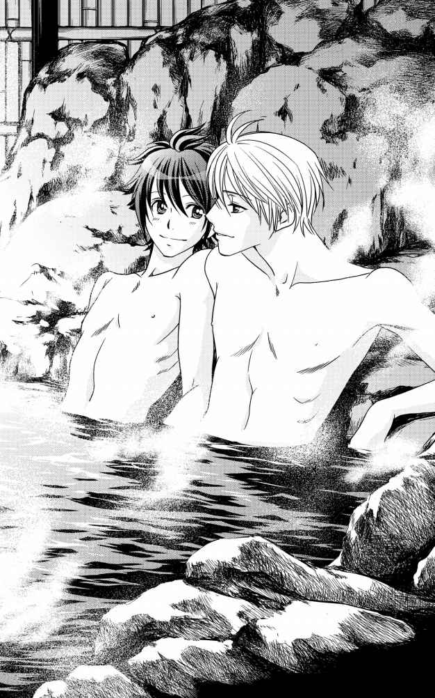
心臓がドクンと鳴って、顔がのぼせたみたいに赤くなるのがわかる。見つめられただけで、こんな気持ちになるのに、真面目に感謝までされたら、恥ずかしくてたまらなくなる。
慌ててうつむいて、上気した顔を隠しながら、照れ笑いでごまかす。
「そんな面と向かって言われたら照れるって。でもこの旅行、来て良かったな」
「ああ。こんな豪華な旅館、めったに泊まれないだろうからな」
湯船のお湯を手で跳ねさせて、トモが嬉しそうに言う。
「旅館のことだけじゃないよ。京都に来てから、トモがすっごく楽しそうにしてるからさ」
「そうか？」
半信半疑なトモに、思わず俺は身を乗り出した。
「そうだって！ 学園にいるときのトモって、楽しそうにしててもなんとなく百パーセント楽しんでるわけじゃないような気がしてたんだ。常にちょっと引いたところにいて、めいっぱい楽しむ直前でブレーキをかけちゃうみたいな感じでさ。でも、京都に来てからのトモは、心の底から楽しんでる気がするんだ」
学園にいるときは、何となく感じていただけだったけど、旅行に来てからのトモを見てはっきりと確信した。学園でのトモはどこか遠慮してるんだって。
「そっか......」
トモは、俺の言葉にちょっと驚いたみたいな顔をしていた。
「確かに、勇気の言うとおりかもな。自分では気づいてなかったけど、あの学園にいる時の俺は、どこかでずっと緊張してたのかもしれないな」
「理事長だもんな。責任を感じて緊張するのも当然だよ」
「そんなご大層な立場にいるつもりはないんだけどな」
トモは謙遜して苦笑する。でもその苦笑ですら、いつもよりどこか柔らかい気がした。
「俺は、トモのことを心配することはできても、トモの背負ってるものを肩代わりしてあげることはできないからさ。今日、トモが昔、一緒に遊んだ時みたいに笑ってるのを見て、すごく嬉しかったんだ」
久しぶりに見たトモの心からの笑顔。それを見ることができただけでも、この旅行は意味があった気がする。
「今日は本当に楽しかった。勇気と一緒だから楽しいんだと思ってたけど、それだけじゃなかったのかもな」
しみじみと呟いたトモは、大きく伸びをする。
「旅行してる間の学園のことは榊先生が代わってくれてることだし、ここにいる間は存分に羽を伸ばさないとな」
「そうだよ！ せっかくのトモの初修学旅行なんだから、めいっぱい楽しまないと！ 学園じゃできないようなこといっぱいしようぜ。あ、......そうだ！ この後、枕投げしないか？ 修学旅行の定番だろ」
こんな高級な旅館で枕投げする客なんて、俺たちくらいだろうけど。でも、羽目を外してこそ修学旅行だ。
枕投げか......、と考えていたトモは、いいことを思いついたように、イタズラっぽく笑った。
「なあ、勇気。枕投げもいいけどさ、その前にしたいことがあるんだ」
「したいこと？」
「せっかく二人きりの露天風呂なんだから、学園の大浴場じゃできないようなことをお前としたい」
囁くように言われた言葉に、ドキリと胸が高鳴る。隣にいたトモが俺の前に来て、湯船の中で俺の手を取る。真剣なまなざしにじっと見つめられるだけで、のぼせてしまいそうだ。
今だけはのぼせそうな頭を冷やしてくれる雪と、綺麗な雪景色に感謝した。
俺の返事を待つような、トモの熱い視線にこくんと頷くと、トモの首に手を回した。
「うん。いっぱい羽目を外そう、トモ」
微笑み合いながら、俺はそっと目を閉じた。俺の唇に、トモの唇が優しく触れた。
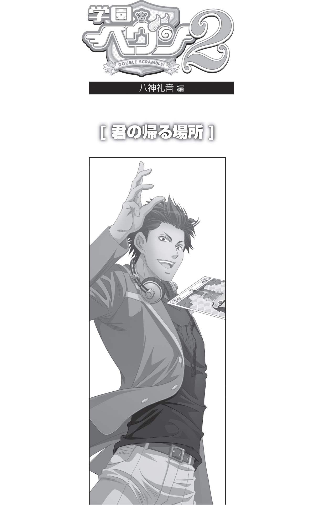
「メリークリスマス！」
クリスマスまではまだ１週間ある土曜の夜。今夜は、生徒会とデュラック主催のクリスマスパーティーだ。
会場である講堂に持ち込んだテーブルの上には、園田さんの料理がずらり。華やかに飾りつけた会場で、みんなが楽しげに食べたりしゃべったりしている。
「ローストビーフ追加お持ちしました！」
芸術的ともいえる美しいお肉が並べられたトレイを運ぶと、わらわらと人が集まり、次々と手が伸びる。
うう...。美味しそう。主催側だから、ずっと会場内をあちこち跳び回っていたけれど、ついつい立ち止まってしまう。
八神もいたら、きっと『美味い美味い』って頬張ってただろうな。いるはずのない姿が思い浮かぶ。学園行事といえど、せっかくのクリスマスのイベントなのに、恋人がそばにいないなんて。少しだけ落とした肩を、誰かが叩く。
「朝比奈くん、そろそろだよ。八神の出番！」
振り返ると近江さんが興奮した面持ちで、拳を握り締めていた。急いで壇上に設置していたスクリーンの前に立つ。
ぱっと明るくなって、映し出されたのはＣＳ放送の画面だ。ライトに照らされたコンサートホールの舞台端に、華やかなドレスに身を包み、マイクを持った女の人が立っている。
「現役高校生のヴァイオリニスト、八神礼音くんです！」
紹介されて、舞台袖から現れたのは......。
「レオレオ、タキシード着てるー」
「なかなか様になっているな！」
アラタさんや空也さんの言葉に、俺は無言で激しく頷く。
八神、すげえカッコいい......。髪型も、いつもより整えている所為か、切れ長の瞳が際立っている。
司会者の女の人は、俺も知ってる有名なアナウンサーだったけど、緊張した様子もなく、八神が軽く一礼をする。
「八神くんは、あの八神杏さんの息子さんなんですよね？ やはり小さな頃からずっとヴァイオリンを？」
「はい。二歳から」
ちょっとぶっきらぼうだけど、そこは八神らしいよな。マイクを向けられても、堂々と受け答えをしている。司会者の女の人が、「八神くんって、ストイックでかっこいいですね」なんて褒めている。
八神は最近、注目の若手ヴァイオリニストとして、テレビの出演依頼がくるようになったらしい。八神自身はそういうのは好きじゃないからと、ほとんど断ってるって言ってた。
だけど今日は、ヴァイオリニストである八神のお母さんがお世話になってるプロデューサーに頼まれたのと、病気の子どもたちのためのクリスマス・チャリティコンサートだから、出るって決めたらしい。
画面が舞台中央に移り、八神がヴァイオリンを構える。調弦の音をバックに、曲名がテロップに出る。『バッハ』は俺でも知ってるけど、どれが曲名なのかよくわからない。パルティータっていうのがそうなのかな。
静寂のあと、八神がすっと息を吸う音が聞こえた気がした。次の瞬間、八神のヴァイオリンからキラキラとした音が魔法みたいに生まれてくる。初めて聞かせてもらったときはただただ楽しいって感じただけだったけど、今はその音の世界に強く引き込まれる。
近江さんに言わせると、最近の八神の演奏は、表現力に奥行きや深みが増して、聴いていて焦がれそうなくらいの情感があるらしい。
画面が八神のアップに切り替わる。ヴァイオリンを奏でる姿に、いつも俺のそばで笑ったり、怒ったりしている八神の面影はない。美しい音色と合わさって、どこか崇高な空気さえ感じる。俺とは別の世界の人みたいだ。
そんな八神を見ていると、俺の胸に締めつけられるみたいな小さな痛みが走る。
変だな。なんでこんな気持ちになるんだろう。八神がこんな大勢の観客の前でヴァイオリンを弾いてるなんて、すごく喜ばしいことなのに。
講堂に流れる、ヴァイオリンの華やかな演奏を聴きながら、俺はたったひとりきりで立ち尽くしているような気分になっていた。
音がする。ノックの音だ。パーティーの裏方で疲れたからか、うとうとしていた俺は、ベッドから跳ね起きて、慌ててドアを開けた。
「八神......おかえり」
今日は帰ってこないのかと思ってた。嬉しくて、自然と顔がほころんでいくのを感じながら、八神を部屋に迎え入れた。
「たでーま。うー。さびぃッ」
俺の横をすり抜けた八神がヴァイオリンケースを置いて、ピーコートを脱ぐと、テレビで見た姿が現れる。コンサート会場から、そのまま帰って来たんだ。八神は勝手しったる様子で、俺のハンガーを手に取り、コートを壁にかける。
「タキシード。カッコいいな」
「はッ。ンなの、息苦しーだけだ」
もぎ取るみたいに蝶ネクタイを取って、シャツのボタンもさっさと外す。きちんと整えられた服が乱れる様に、ちょっとドキッとした。シャツの首元から、浅黒い肌と鎖骨が見える。このくらいの露出、普段のＴシャツ姿なら当たり前なのに。
つい、目をそらしてしまった俺なんて気にすることなく、八神は俺のベッドにごろりと寝転がった。
「あー。あったけ」
「タキシード、皺にならない？」
「別にいい。どーせクリーニングに出すだけだからな」
じゃあ、もう少しこの姿を拝めるのか。
八神の隣で、俺も横になる。八神の背中にピッタリとくっつくと、衣装についた香りなのか、いい匂いがする。
八神は居心地悪そうにもぞっと動いたけれど、くっついた俺から身体を離そうとはしなかった。
「こうするともっと、あったかいだろ？」
ふんと八神が鼻を鳴らす。いつもの『バカ』は飛んでこない。
恋人になったからと言って、ふたりでいる時間がすごく増えたわけではない。休みの日でも八神は、ひとり黙々と練習に打ち込むからだ。だけど、今日みたいに知らない人だらけの中で演奏してきた日には、なにも言わずに俺の部屋にごろごろしに来る。
たぶん、すごく疲れてるんだろうな。
「演奏聴いた。すごくよかったよ。みんな聞き惚れてた。もちろん俺も！」
「そりゃ、どーも」
そっけないけど八神が返事をくれたから、嬉しくなって身を乗り出す。
「最初のメロディからして、キラキラ～ッて感じだし、それにものすごい速さだし、すっごい引き込まれた！ さすが八神！ すごいよ！」
「おめー......」
八神が薄く目を開ける。億劫そうな顔してたのが、不意にほころぶ。
「お前、しょっちゅうオレの演奏聴いてるくせに、よくそんなに感動できるな」
八神が笑う。呆れたみたいに、ちょっと皮肉っぽく。だけど、くすぐったそうに目を細めて。
八神だ。俺が知ってる、いつもの八神だ。ＢＬ学園に一緒に通う、俺の大好きな。
「八神......」
なんか、すごく触れたくなって、俺は自然と八神にキスをしていた。唇に、ちょっとかさっとするけど、柔らかくて冷たいものが当たる。唇だけじゃない。鼻先にもほっぺたにも、冷え切った素肌が当たる。
「っ......、いきなり、すンなよ......」
「キスしてもいい？ って言うと、いちいち聞くなって怒るくせに。ってか、八神の顔、すっげー冷たい」
「そりゃ、......帰ってきたばかりだからよ」
夜遅いんだし、泊まってきてもよかったのに、この寒い中、わざわざ帰ってきて、真っ直ぐ俺の部屋に来てくれたんだ。
そう思ったら、すっごく嬉しくて、もう一度キスしながら八神の身体をぎゅーって抱き締めた。
「ッカやろっ。離せってッ」
八神は俺を押し返そうとするけれど、やめてなんかやらない。
「いいじゃん。一週間早くても、せっかくのクリスマスパーティーに恋人不在だったんだ。その愛しい恋人が帰ってきたのに、離すわけないだろ」
八神にしがみつく腕に力を込めて、冷たい頬や鼻先に俺は何度もキスをする。
「っ......、そんなん知るか......」
最初は拒むように身をよじっていたけど、だんだん触れるようなキスを受け入れてくれる。たぶん、今日はＯＫなんだ。本当に嫌なときは容赦なく蹴りが飛んでくる。
「八神......、もっとしたい......」
「んっ......、ふっ......」
唇が合わさった。深く唇を合わせて、俺は八神を抱き締める。八神も俺を抱き返す。
手のひらに感じる、いつもと違う布の感触。タキシードの生地って、こんなに柔らかいんだ。
「ね、これ着たまま、してもいい？」
「は？」
八神の怪訝な顔に、答えを待たず、ボタンを外し始める。
「ちょ...っ、なにする気だ。てめぇ！」
「触るだけだよ。いつもそうだろ？」
シャツの下の素肌に指先が触れ、八神がびくっと身を竦ませる。
「触る、だけだからな......」
恋人同士になって約半年。恋愛に対して極度に奥手な八神とどうイチャイチャするか、俺にとって模索の日々だった。
「何も考えなくていいから。八神はただ感じてて」
あるとき、ヴァイオリンを弾くときは『好き』とか『嫌い』とかいう感情は邪魔で、自分を空っぽにさせると八神が言っていたことを思い出して、ひとつの関門を越えられた。
「......あっ......」
薄く筋肉がついた腹筋を辿り、胸の先に指が触れると、八神は微かに色づいたような吐息を漏らす。手や唇や舌で触れ合うだけの愛し方よりも、もう一歩進みたい気持ちはある。でも、八神が俺を求めてくれる日を待つつもりだ。
「っ......、上ばっか、すんな......」
シャツの隙間に顔を埋めて、口付ける俺の頭を、八神が躊躇いがちに触れてくる。
「じゃあ、どこ触って欲しい？」
次の扉は、もう少しで開きそうな気がするから。
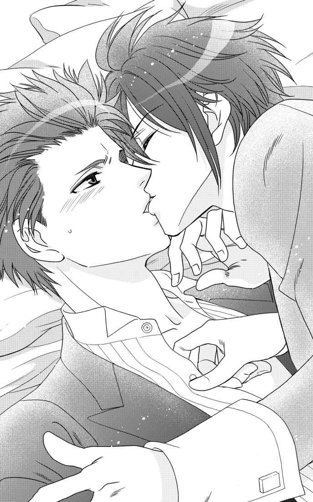
「やーがみ」
もろもろを手早く片付けたあと、ベッドの端のほうで、俺に背を向けて丸まって寝ている八神に声をかける。
「......あんだよ」
あ、よかった。まだ寝てない。
耳の後ろのところに、チュッって音を立ててキスしたら、くすぐってーだろーがって、八神に手ではらわれる。
「テレビでさ、司会者の女の人に、カッコいいって褒められてたね」
「知るか。もう、テレビなんか出ねー」
からかったら、八神はムッとした顔になる。
「でも、俺は出てほしいな」
「あァ？」
「だって、八神のヴァイオリンをたくさんの人に聴いてほしい。今日だってコンサートには行けないけど、テレビを通して聴くことができたから」
「......そーか」
俺の言葉に、八神の目がふと遠くなる。なにを思っているのだろう。演奏？ 観客？ それとも自分の過去と未来？
俺は、ずっと前から気になってたことを、思いきって聞いてみた。
「なぁ、八神は留学とかしてみたいって思う？」
「あンだ？ いきなり」
「ん......。俺、最近同い年くらいのヴァイオリニストとかピアニストの子たちが気になるようになってさ。そういう子たちってみんな留学したり、若いうちから海外に出て活躍してるだろ？ だから八神も、そのうち......」
「バーカ」
額の上で、ぺちって音がした。俺を叩いた八神は、ごろりと寝返りを打って、俺に再び背中を向けてしまう。
「ここを卒業するまでは、海外なんか行かねーよ」
「なんで？」
起き上がり、八神の背中にのしかかるみたいにして覗き込む。そんな俺の耳に、八神の照れくさそうな声がする。
「そりゃ、てめー......て、てめーがいるからに決まってンだろ」
すごく、すごく小さな声。
嬉しくて、そのままぎゅっと抱き締めた。優しくしたいって気持ちが、どんどんとあふれてくる。触れ合った身体が、じんわりと暖かい。
「ねみい」
八神が身体を縮こまらせて、顔をベッドに伏せてしまう。これは、たぶん照れ隠し。
だけど、本当に眠そうだったから、俺は八神の耳元で小さく囁いた。
「おやすみ。八神」
目を閉じると、美しい音色が聴こえてくる。俺の大好きな、八神のヴァイオリン。
明日、八神にクリスマスソングを弾いてって頼んでみよう。せっかくなら学食でミニコンサートにしたら、いいかもしれない。そうしたら、俺も合わせて歌おうか。きっとみんな喜んで耳を傾けてくれるだろう。
来週はＢＬ学園で過ごす、初めてのクリスマスだ。
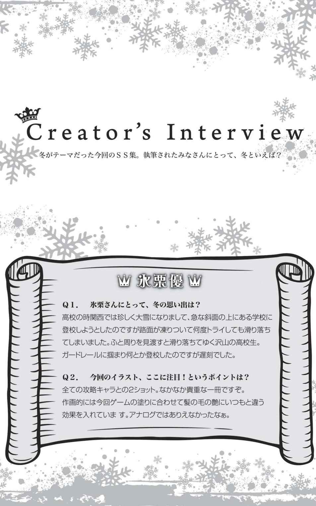
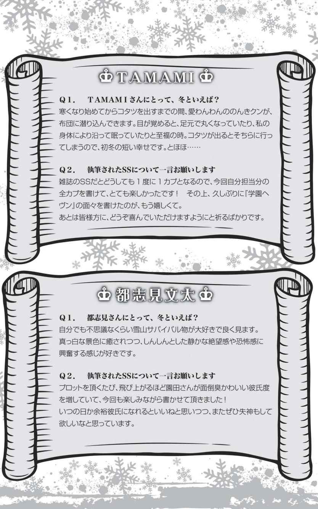
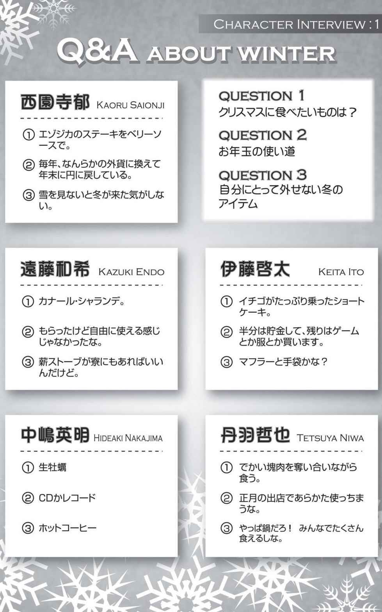
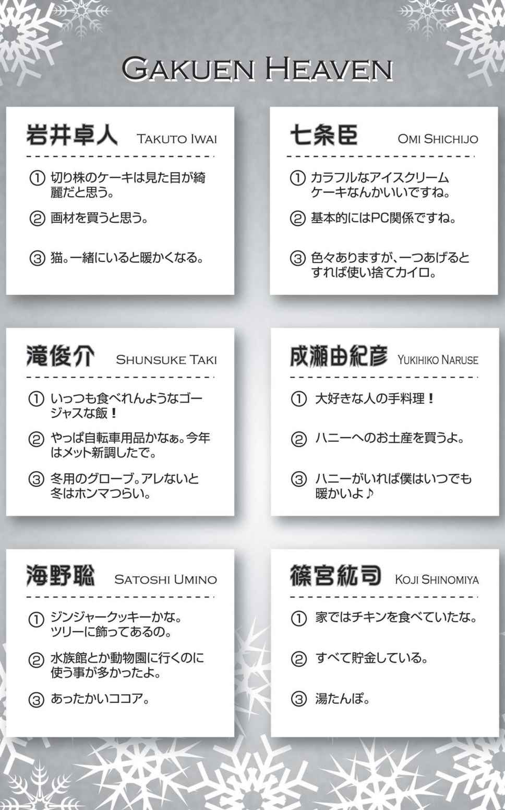
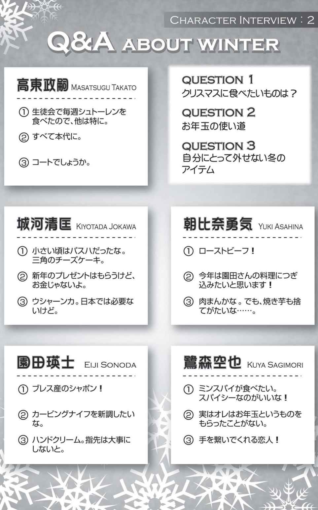
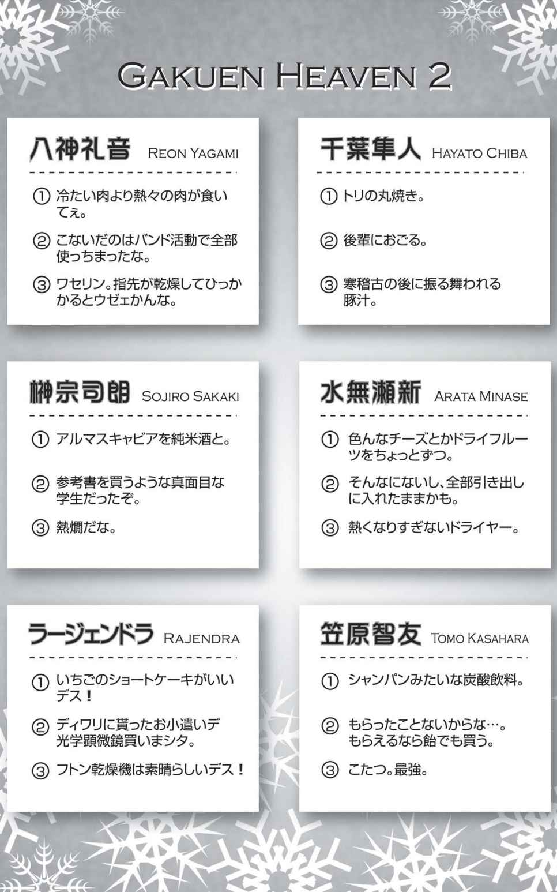
原作：Spray
イラスト：氷栗優
著：ＴＡＭＡＭＩ、都志見文太
発行：Spray
発行日：2015年10月30日（電子書籍版）
（書籍版：2014年12月28日）
[SprayオフィシャルHP]
http://spray.product.co.jp/
[学園ヘヴンポータルサイト]
http://www.gakuenheaven.jp/
この電子書籍は、2014年にイベント販売用としてかき下ろされた書籍を電子書籍化したものです。
本書の一部または全部について、当社の許可無く無断で複写・転載・配信（インターネット上へのアップロードを含む）することは、著作権法上での例外を除き、すべて禁じられています。
©Spray
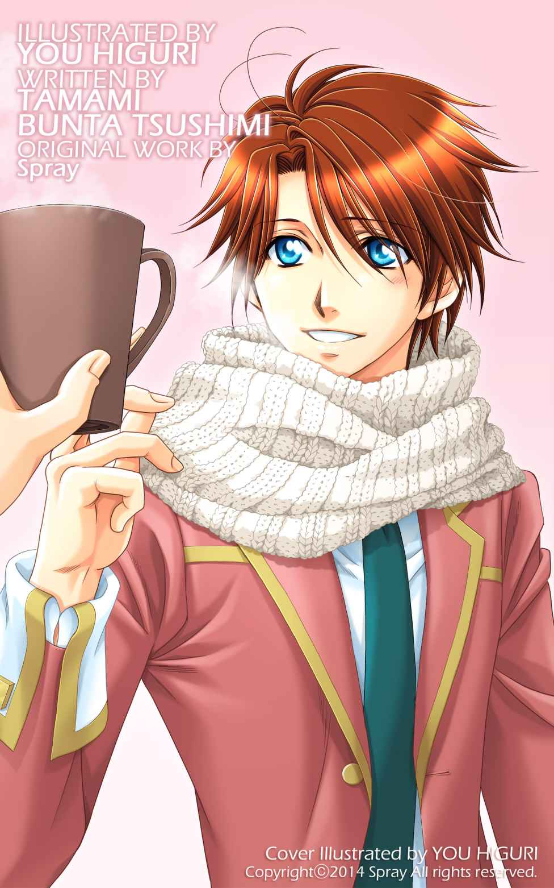